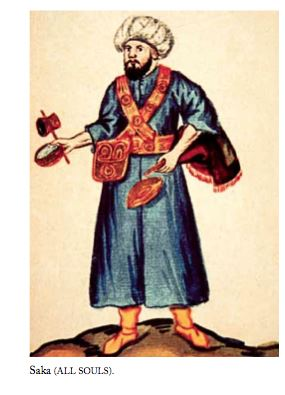
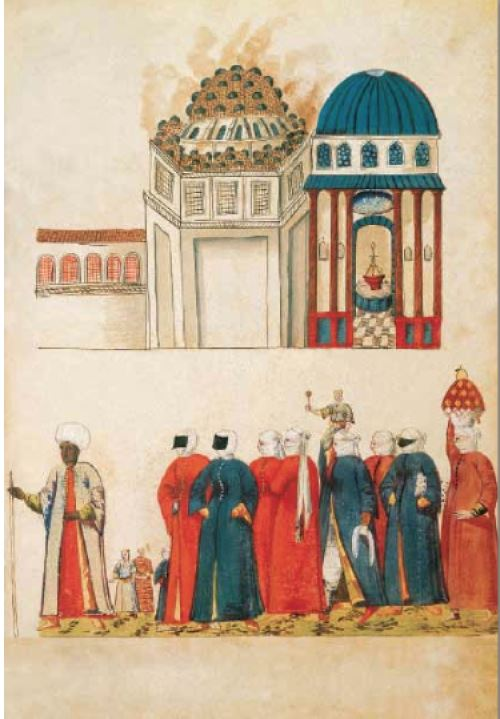

İstanbul ’un Kadınları
Pedro, Müslüman kadınların câmiye pek gitmediğini, câmilere yalnızca kızların ya da kocası en az altı ay önce ölmüş dul kadınların girebildiğini söyler [VIAJE 201]. Ancak, dinin koyduğu yasaklardan dolayı toplumun böylesine tutucu olmasına karşın, Müslüman kadınların sokakta kendilerine söz atan, yanlarına yaklaşan erkeklere hiç de olumsuz davranmadıklarından, yabancı erkeklerle, verilen adreslerde buluştuklarından da söz eder. Pedro ’nun dediğine göre kadınlar buluşma öneren erkeklere önce kendi evi olup olmadığını sorar, erkek buluşabilecek bir ev adresi veremezse kızarlardı. Bu çeşit buluşmalarda kadınlar çoğunlukla kimliklerini açıklamaktan çekinirler, kimi kez de hem adlarını verir, hem de buluşmalar yinelenirdi [VIAJE 237-38].
Kadınların gruplar hâlinde, halılar ve yiyeceklerin yükü altında ezilmiş halayıklarıyla hamama gitmeleri çok ilginçti. Kadınlar baştan aşağı siyaha boyanmış devetüyü bir kumaşa bürünürdü. Yalnızca metal topuklu, mavi, sarı ya da kırmızı potinleri görünürdü. Kimi zaman da kumaşın kıvrımları arasında gizledikleri elleri fark edilirdi, çünkü eldiven kullanmıyorlardı. Yalnızca elleri, sesleri ve tavırları yaşlarını belli ederdi. Sokak giysileri incelikten uzaktı. Ancak eve gelir gelmez üzerlerindeki o biçimsiz şeyi çıkarırlardı. Ev giysileri ipekten, altın işlemeliydi. Gözleri siyahtı. Kaşlarını boyayla birleştirirlerdi. Saçları ya siyahtı ya da siyaha boyarlardı. Yanaklarına zülüfleri dökülen saçlarını toplarlardı. Ayak ve el parmaklarına kına yakarlardı. Ayakları çok yıkamaktan bembeyazdı. Kadınlar yere bağdaş kurup otururken kimi zaman bacakları ve tenleri görünürdü, çünkü çorap giymezlerdi. Ayak bileklerini değerli halhallar süslerdi. Kollarına da değerli bilezikler takarlardı. Başlarına taktıkları altın ve tüy, işlemeliydi. Giysilerinin yakaları açıktı. Fransız kadınları gibi bellerini bağlamaz, Venedik kadınları gibi elbiselerini kabartacak şeyler giymez ya da takmazlardı. Olduklarından farklı görünmek için değil, örtünmek için giyiniyorlardı.
Bu Türk hanımları ince, zevkli ve becerikliydiler. Şarkı söyler, ud çalarlardı. Şarkı söylerken öylesine duyarak söylerler, öylesine içten duyguları yansıtırlardı ki onları dinleyen bir âşık, aşktan sarhoş olup rahatlıkla kendisini bıçaklayabilirdi. Yaraları sevgilinin öpücükleriyle iyileşirdi.
Rum kadınlar çok güzel giyinirdi. Tüm paralarını ipek ve altın işlemeli kumaşlara yatırırlardı. Peçe takmazlardı, ancak insan içinde çekingendiler ve fark edilmemeye çalışırlardı. Az konuşurlardı. Yüzlerini boyarlardı. Genç Rum kızları evlerinden nadiren çıkar, pencereden sokağı seyretmekten sıkılmazlardı. Birinin kendilerine baktığını fark ettiklerinde geri kaçarlardı [CANAYE 76-79].
Hanımların ev işlerini yapacak birçok kadın esirleri vardı. Evli kadınlar yemek pişirmez, çamaşır yıkamazdı. Bütün gün tembel tembel oturur ve dikiş nakış, örgü, dokuma ve benzeri işleri yapacak kadınlar tutarlardı. Bu tür Türk kadınları evi çevirmekten hiç anlamazlardı ve evlerinde düzensizlik hâkimdi [DERNSCHWAM 130].
Schweigger, evli Türk hanımlarının Avrupalıların düşündüğü gibi evlerinden dışarı çıkmadıklarının doğru olmadığını yazıyor. Schweigger ’e göre, tüm dünya Türk ’ün gücünden korkarken, Türk erkeği karısından korkardı. Kadın evinin mutlak hâkimiydi. Sayısız hizmetkârları vardı. Orta sınıftan kadınların bile dört beş hizmetkârı olurdu. Dolayısıyla kadınlar bütün işi hizmetkârlara bırakırdı. İş işlemez ya da örgü örmezlerdi. Kendi evlerinde konuk gibiydiler. İyi havalarda grup halinde yürüyüşlere veya hamama giderlerdi. Dedikodu yaparak eğlenceli saatler geçirirlerdi. Erkek eve geç geldiğinde sofra kaldırılmış olurdu. İşte o zaman korkudan titretecek kadar kötü muameleyle karşılaşırdı. Kadınların en büyük zevki iyi giysiler giymek ve sokakta gösterişli görünmekti. Bunlar için kocalarından gündelik para isterlerdi. Yalnızca çok yoksul kadınlar baştan aşağı ipeklere bürünemezdi [SCHWEIGGER 202].
Kadınlar genellikle câmiye gitmez, evlerinde ibadet ederlerdi. Kimi yaşlı kadınların câmiye gittiği olurdu, ancak bunların erkeklerle birlikte oturmalarına izin verilmezdi. Erkeklerin arkasında, olabildiğince uzakta otururlardı [DERNSCHWAM 131].
Wratislaw ’ın edindiği izlenime göre Türk kadınları geleneklerin öngördüğü gibi kapalı değillerdi. Örneğin, geleneklere göre bir erkek evlenmeden önce karısını ne görebilir ne de onunla konuşabilirdi. Dolayısıyla da evleneceği kız hakkındaki tüm bilgiyi kadın akrabalarından alırdı. Ama elçilikteki Yeniçeri muhafızlara göre bu geleneğe artık uyulmuyordu ve bir kızın gelecekteki kocası tarafından görülmesi günah kabul edilmiyordu. Kızlar kendileriyle evlenmek isteyen erkeğe yüzlerini göstermenin bir yolunu buluyorlardı. Türk evlerinin genellikle bahçelerine bakan balkonları vardı. Kadınlar buraya çamaşır asarlardı. Kız ne zaman çamaşır asacağını genç adama bildirirdi. Sonra en güzel giysisi içinde balkonda belirir, kayıtsız bir edayla çamaşır asmaya koyulurdu. Kızın evinde balkon yoksa, bir arkadaşının evine giderdi. Genç adama rastlayacağını bilmiyormuş gibi davranırdı. Genç adamın kendisini görmekten mutlu olduğunu duyarsa bu kez erkeği baştan çıkarmak için elinden geleni yapardı. Erkek kızla evlenmeye karar verirse, annesi-babası ve arkadaşları evlilik anlaşması için bir araya gelirlerdi [WRATISLAW 184-85; 201-202].
Wratislaw ve elçilikteki genç arkadaşları Türk kadınlarını peçesiz görmek istiyorlardı. Bu nedenle Yeniçerilerden birinden bu işi tehlikesizce ayarlamasını istediler. Bu Yeniçerinin adı Mustafa ’ydı, Bohemyalı ’ydı. Bu yüzden de yurttaşı Wratislaw ’la kolaylıkla dostluk kurdu. Birkaç gün sonra Mustafa kayıkla bir bahçeye gitmelerini önerdi. Onlarla başka Yeniçeriler de geldi. Bahçeye geldiklerinde, Yeniçeriler onları hizmetkârlarla yalnız bırakıp ikinci bahçeye gittiler. Uzun bir süre sonra döndüler ve Wratislaw ile üç arkadaşına tanıdıkları bazı hanımların öbür bahçede olduğunu söylediler. Hepsi diğer bahçeye girdiğinde, Wratislaw bir grup peçeli Türk kadınının biraz ileride yürüdüğünü gördü. Mustafa kavalını çıkarıp bir melodi çalmaya başlayınca kadınların telaşlandığı görüldü. Dönüp kimin kaval çaldığına baktılar. Mustafa onlara doğru gitti, yerlere kadar eğilerek onları selâmladı, hepsinin elini öptü ve bahçeye birkaç Hıristiyan arkadaşını getirdiğini, bunu hakaret olarak almamalarını rica etti. Biraz konuştuktan sonra, Wratislaw ve arkadaşlarını çağırdı. Onlar da kadınların ellerini öptüler ve rahatsız ettikleri için özür dilediler. Daha sonra bahçedeki çardağa girdiler ve hep beraber oturdular ve Mustafa ’nın tercümanlığıyla konuşmaya başladılar. Kadınlar meyve getirterek yabancı konuklarına ikram ettiler. Gençler peçelerini çıkarmalarında ısrar edince biri dışında hepsi çıkardı. Batılılar için hiç de güzel değildiler. Tenleri esmer, gözleri siyah, saçları ve kaşları boyalıydı [WRATISLAW 224-226].
Mustafa ’nın, yaşlı bir adamla evli genç ve çekici bir kadınla ilişkisi vardı. Kadının kocası kuşkulanıyordu. Bir gün Mustafa kadını o gün öğleden sonra evine çağırdığını söyledi. Wratislaw, eğlencelerine katkıda bulunmak amacıyla ona şarap ve şekerleme yolladı. Randevu, Mustafa ’nın çavuşunun ibadette olacağı bir saatte, öğleden sonra geç vakitteydi. Buluşma gününden önce, bu kadın hamama giderken, elçilik binasının önünden geçtiğinde kocası arkasında olmasına karşın buluşmaya geleceğini işaretle belirtti. Hamama giderken âdet olduğu üzere kadının yanında iki esir hizmetçi vardı. Kadının havlularını ve giysilerini başlarının üzerlerindeki bohça içinde ve bakır kaplarda taşıyorlardı. Kuşkulanan koca hamamın kapısının karşısında karısını bekledi. Hamama giderken kadının üzerinde yeşil bir giysi vardı. Âdet olduğu için de peçeliydi. Hamama girdikten kısa bir süre sonra kırmızı bir giysi ile dışarı çıktı. Kocası fark etmemişti. Yakındaki bir eve girdi. Mustafa ’yla buluşup eğlendikten sonra kırmızı giysisiyle döndü. Sonra da yeşil giysisi ile hamamdan çıkıp yumuşak başlılıkla evine geldi. Wratislaw ve Mustafa kadının kocasına yaptığı oyunu anımsadıkça gülüyorlardı [WRATISLAW 227-229].
Kadın düşkünü erkekler dört kadın alırlar, ya hepsiyle aynı yerde otururlar ya da dördüne ayrı ev açarlardı. Zenginse, sağlıklı ve güçlü bir esir satın alırlar ve onu günde 7 ilâ 12 akçe arasında değişen bir ücretle kiralarlar, böylelikle para kazanırlardı. Bazı kurnaz esir sahipleri esirlerini câmiye dilenmeye gönderirler ve bunların kazandığı paraları kadınlara harcarlardı. Ahlâksız kadınlarsa genç erkekler hesabına aracı olarak çalışıp birbirlerinin para kazanmalarını sağlarlar, sonra da kazandıkları parayı içkiye yatırırlardı. Evinde herkese şarap parası bulan bir erkeğin sırtına giyecek gömleği kalmazdı. Yine de, para olsun olmasın herkes iyi bir kaftana sahip olmak isterdi. Günde bir bardak ballı ya da armut suyundan yapılmış şerbet içebilen varsıl ve saygın sayılırdı.
Özellikle savaş zamanında, kadınlar, hamama gider ve evlerinden uzakta yiyip içerlerdi. Hangilerinin fahişe olduğunu anlamak zordu; çünkü tüm kadınlar peçe takıyordu. Aslında kadınların hiçbiri iyi ev hanımı değildi. İstanbul kötülükler kentiydi. Her taraf fahişe kaynıyordu. Macar kadınlarının söylediği doğruydu: Erkek çocuklardan çok, kız çocuklar iyi denetlenmeliydi [DERNSCHWAM 104].

İnanışlar ve Boş İnançlar
Pedro, câmi avlularında, câmilerin önündeki büyük meydanlarda aldatmacalı oyunlar yapan şaklabanlardan, bakla falı bakan kadınlardan, çeşitli bitki ve ağaç kökleriyle kızarmış et satan satıcılardan söz eder. Hem Rumların, hem Türklerin fala ve kehanete çok inandıklarını belirtir [VIAJE 272]. Lubenau ’nun söylediğine göre Bayezid Câmii yakınında bulunan Tahtakale ’deki meydan yakınlarında çok sayıda falcı vardı. Bunlar, küçük kâğıt parçacıklarının iliştirildiği madenî tekerlekler kullanıyorlardı. Tekerlek dönerken, döndürenin özelliklerini gösterdiği söyleniyordu. Kimi kâhinler zar kullanırlardı. Kimisi de Arap astrologlardı. Bunlara akıl danışıldığında olayın gününü saat saat, dakika dakika araştırırlar ve ortaya çıkan şekilleri astronomik gereçlerle ölçer ve bir horoskop haritası çizerlerdi. Örneğin, soyulmuş biri ve savaşa giden bir adam kâhine gelerek başına ne geleceğini ya da seferde şanslı olup olmayacağını sorardı. Kâhinin dediği gibi hareket etmeye niyetli olsa bile sonuçta hep bildiğini okurdu. Çünkü her şeyin Tanrı yazgısı olduğuna inanılırdı [LUBENAU 185-186].
Dernschwam ’a göre Türkler, masal ve hurafelerden çok hoşlanırlar. Avrat pazarı ’yla ilgili bir hurafe de şöyle: Bir zamanlar burada büyük bir kule vardır. Bir gün, kimse bir şey yapmadığı halde, bu kuleden bir sürü dev yılan denize doğru fırlar; arkalarında koskocaman dev bulutlar bırakarak hızla kaybolurlar. Üstelik bunları gören binlerce kişi çıkar [DERNSCHWAM 97-98].
Betzek, Yılanlı Sütun üzerine bir söylence anlatıyor. Buna göre bu sütun bir başka yere yerleştirilmiş, yılan sürüleri belirmiş, sütun eski yerine konunca yılanlar yok olmuş [BETZEK 24].
Çemberlitaş yakınındaki Atik Ali Paşa Câmii ’nin yanında, altı tane sepet vardı. Bunlar, St. John ’un kitabında sözü edilen bir mucize olarak beş somun ekmekle dolan altı sepetin aynısıydı [DERNSCHWAM 144].
Gerlach, Türklerin kâğıtlara Kur’ân ’dan sözler ve âyetler yazarak muskalar yaptıklarını yazıyor. Böylesi kâğıtları boyunlarında taşırlarsa yüksek ateş, böcek ısırma ve sokmalarından korunacaklarına inanıyorlarmış. Ayrıca, Kur’ân ’dan belirli bir parça okununca onun bir ay içinde öleceğine de inanılırmış. Sultan bu türlü etkinlikler için yüzün üzerinde adam kullanırmış [GERLACH 384].
Benzer bir biçimde, Türkler sahibi oldukları kölelerin ufak bir giysisini saklarlardı. Köle kaçarsa büyüyle onu geri getireceklerine inanırlardı. Kaçak köleyi geri getirmenin başka bir yolu da bir mektup yazıp onu eve asmaktı. Köle kaçmayı planladığında mektup sallanacak ve köle geri gelene dek sallanmaya devam edecekti. Ya da köle sahibi iki ya da üç imâmı çağırır, uzun bir ipe düğüm attırır ve her bir düğüm için dua okuturdu. Bu ipi dama koyarak esiri geri döndüreceklerine inanırlardı [GERLACH 481].
Gerlach başka batıl itikatlardan da söz ediyor. Kadınlar, Hıristiyan birini görmenin şans ve mutluluk getireceğine inanırlarmış [GERLACH 103]. Gerlach ’ın yazdığına göre 1575 yılındaki ciddi kuraklıkta Türkler yağmur ve bolluk duasına çıkmışlar [GERLACH 91].
Gelinin evlendiği gün kişniş, sütten yapılmış yiyecekler, yeşil ve ham elma, sirke ve gebe kalmayı önleyen şeyler yemesi yasaktı. Damat gelini zifaf odasına götürdüğünde gelin damadın ayaklarını yıkar, sonra evin dört bir köşesine Tanrı ’nın rahmeti için su serperdi. Damat gelini yatağa götürdüğünde Kur’ân ’dan bir sûre okumalıydı. Karısına her dokunuşundan önce Tanrı ’ya dua etmeliydi.
Müslümanlar arasında evliliğe dair birçok batıl inanış vardı. Eğer erkek bir kadınla yatarken bir başkasını arzularsa doğacak çocuk sakat olurdu. Meyveli bir ağaç altında ana rahmine düşen çocuğun tepkileri zayıf olurdu. Koca, karısına isteği dışında sahip olursa doğacak çocuk huysuz olurdu. Ayın ilk gecesinde ya da on beşinde veya son gecesinde ana rahmine düşen çocuğunsa iblisçe eğilimleri olurdu [POSTEL 25-26].
Her sabah Türkler fal kitaplarını açarlar ve orada yazılanlara göre işlerini yürütürlerdi. Kötü bir şey yazılıysa ne kadar önemli olursa olsun işlerini ertelerlerdi [GERLACH 48].
Birçok Türk mart ayının ilk gününde cinlerin çocuk görünümüne girdiklerine inanırdı. Bunlar doğmadan ölmüş çocukların ya da doğumdan hemen sonra günah işlemeden ölmüş çocukların hayaletleriydi. Bu nedenle yardımseverlerdi. Zarar vermezlerdi. Gerlach, iki bilgin üzerine duyduğu bir öyküyü aktarıyor. Bunlardan biri cinlere inanırmış, öteki inanmazmış. İkisi de düşüncelerini kitaba döküyormuş. Birbirlerine kitaplarını gösterdiklerinde inanmayan şaşırmış, çünkü ikisinin kitaplarının içeriği neredeyse aynıymış. İnanan, her akşam cinlerin ötekinin gündüz yazdıklarını kendisine bildirdiklerini, böylece de doğaüstü varlıkların varoluşunun kanıtlandığını söylemiş [GERLACH 82].
İstanbul ’da pek çok ayazma vardı. Bu ayazmalar birçok yarayı iyileştirirdi. İnsanlar minnettarlıklarını göstermek için ya oluğuna ya da civardaki ağaçlara bezler asardı. Gerlach, Galata ’da içinde canlı balıklar olan kutsal bir çeşmeden söz ediyor. Ancak bu tanım İstanbul yakınındaki Balıklı diye anılan ayazmaya uyuyor. Türkler, Rumlar ve Ermeniler, bunun suyundan içen ya da suyuyla yıkanan yüksek ateşli herkesin iyileşeceğine inanırlardı. İbrahim adında bir Yeniçeri Gerlach ’a bu sudan içerek üç yıl boyunca çektiği yüksek ateşten kurtulduğunu, bir kadın da kızının iyileştiğini söylemiş. Pınarın başında bir Türk nöbetçi vardı. Su çekmek için iki akçe alıyordu. Gerlach, balıkları görmemiş. Ancak kendisine iki yanda bulunan kubbelerin altında oldukları ve bir oltayla tutulabilecekleri söylenmiş. Efsaneye göre İmparator Konstantin bu pınar başında yemek yemek ve dinlenmek için durmuş ve pınara kızarmış bir balık attığında balık canlanmış. Hem Türkler, hem de Hıristiyanlar arasında burayı 17 Nisan ’da ziyaret etmek alışkanlık olmuştu. Eskiden burada şarap ikram edilirdi. Ancak bu daha sonra tedirgin edici olaylara yol açtığı için yasaklandı [GERLACH 185-186].
Viaje ’nin yazarı Pedro, Sinan Paşa ’nın sarayında doktorken, Sinan Paşa hastalanır. Ne Pedro ne de başka doktorlar Sinan Paşa ’yı iyileştiremezler. Sinan Paşa gittikçe kötüleşir. Üfürükçüler, büyücüler ortaya çıkarlar ve hasta adamı dua ve kurbanlarla birkaç gün içinde iyileştirebileceklerini ileri sürerler. Paşanın hastalığı su toplamasıydı. Durumu değişiyordu. Bazen iyiye gidiyordu, bazen kötüye. Pedro ’nun artık diğer doktorlarla arası düzelmişti. Ancak bu kez de paşanın hastalığını birkaç gün içinde dua ve adaklarla, kurbanlarla iyileştirebileceklerini iddia eden üfürükçüler çıkmıştı ortaya. Bu şarlatanlar paşaya 7.000 dükaya mal olmuşlardı.
Bahçede çadırlar kurdular. Kimileri bütün gece ağlıyor, kimileri aşık kemikleri atıyor, kimileri büyülü işaretler ve muska yazıyor, kimileri de su dolu bir tasa kâğıt parçacıkları koyup paşanın içmesini istiyordu. Bunların eşyaları arasında bir Yahudi tabutundan çiviler, bir Müslüman tabutunun tutamağı, bir Hıristiyan tabutundan bir odun parçası ve ufak tefek ıvır zıvır vardı. Bu sahte hekimler arasında bir de çok tanınmış bir kadın üfürükçü bulunuyordu. Bu kadın paşanın önce bir siyah keçiye bakmasını, daha sonra kimi sözler söyleyerek ve kimi işaretler yaparak dişi bir eşeğin altından geçmesini tavsiye etti. İriyarı olduğu için zor da olsa paşa söylenenleri yaptı. Daha sonra, kadın, paşaya, insanın bağırsaklarını da sökecek kadar kuvvetli bir müshil verdi. Sonra, dört koyun ve bir pala getirilmesini istedi. Gözlerini gökyüzüne çevirip bazı dualar okudu. Daha sonra kasaba dönüp koyunların başlarını pala ile kesmesini istedi. Koyunların başsız cesetlerini dışarıda beklemekte olan kızına yolladı. Kadın, en son olarak da kurbanların kanının aktığı yerde, bir ekmek fırını yapılmasını emretti. Bir gün bir gece içinde istediği yerine getirildi. Kadın, paşaya, dokuz gün boyunca siyah keçiye bakmakla başlayan ve bu fırından ekmek yemekle son bulan bu ritüeli gerçekleştirdiğinde iyileşeceğini anlattı. Ancak paşanın kisti büyüdü, acısı arttı ve yüzünün rengi sarardı [VIAJE].
Türklerde başta su, sonra da kâğıt, neredeyse kutsal sayılırdı. Kutsal kitapları kâğıda yazıldığından, kâğıdın onların gözünde ayrı bir saygınlığı vardı. Bu yüzden yerde atılmış boş, ya da yazılı bir kâğıt görürlerse hemen kaldırır, temiz bir yere koyarlardı [DERNSCHWAM 71].
Busbecq, sık sık taş duvarlardaki çatlaklar arasında sıkıştırılmış kâğıt parçacıklarına rastladığını yazıyor. Merakından bu kâğıtlardan kimine bakmış ve çevirttirmiş. Ancak ne yazılanlar saklamaya değermiş ne de Türkler açıklamaya kalkışmışlar. Yine de daha sonra öğrenmiş ki, Türklerin küçücük bir kâğıt parçasına bile, üzerinde Allah ’ın adı yazılı olabilir diye, saygısı varmış. Bu yüzden yerde bir kâğıt parçası bulduklarında üzerine basılmasın diye hemen bir çatlağa sokuverirlermiş. İnançlarına göre, Kıyamet Günü’nde Muhammed, müminleri günahlarından dolayı cezalandırıldıkları A ’râf ’tan Cennet ’e çağırdığında, sonsuz mutluluğa ulaşmak için yalınayak korlaşmış ateşin üzerinden geçmek zorundaydılar. İşte o zaman üzerine basılmayı önlemiş oldukları tüm kâğıtlar ayaklarının altına yapışacak ve cennet yolundayken acılarını hafifletecektir. Kâğıda gösterilen bu saygı Busbecq ’in rehberlerinin, hizmetkârlarını ağır suçlamalarına yol açmış. Çünkü rehberler onları kâğıdı pis bir işte kullanırken görmüşler [BUSBECQ 26-27].
Busbecq ’e göre Türkler, genellikle hayvanlara iyi davranıyorlardı. Özellikle de yararlı kuşlara. Örneğin, çöpleri yiyerek kentlerin temizliğine katılan çaylaklara. Bu nedenle, çaylaklar insandan korkmazdı. Bunlara evcil bile denebilirdi. Islık çalındığında alçalır, kendilerine atılan yiyecek parçalarını kaparlardı. Bu nedenle Busbecq, koyun kestirdiğinde çaylakları hayvanın iç organlarını yemeğe çağırırdı. Birkaç dakika içinde büyük bir kuş sürüsü evin üzerinde daireler çizmeye başlar, sonra da bahçeye inerlerdi. Galeriyi ayakta tutan sütunlardan birisinin arkasına saklanan Busbecq, kimi kez birkaç kuş avlamayı başarırdı. Ancak Busbecq bu sporla yalnızca kapılar sıkıca kapandığında uğraşırdı. Yoksa bu, Türkleri kızdırabilirdi.
Türklerin kızmasının nedenini, hayvan ya da kuş eti yememeleri olarak açıklamıyor Busbecq. Türkler hayvanlara acı çektirmeye karşılarmış. Öyleki kimi ötücü kuşları bile, özgürlüklerini ellerinden almaya hakları olmadığına inanarak, kafese bile koymazlardı. Ancak, pek çok Türk de kafeste bülbül beslerdi. Busbecq, saka kuşlarının sokaktaki evlerden birinin penceresinden gösterilen madenî bir parayı almak için uzun mesafeler uçmaya eğitildiğine tanık olduğunu yazıyor. Parayı tutan bunu kuşa vermezse, kuş onun elinin üzerine tüner, eğer pencereden çekilirse kuş parayı almak için uğraşırdı. Kuş, ödülünü gagasına alır almaz kendisine zil çalan sahibine geri uçarmış. Parayı veren kuşa, ödül olarak biraz kenevir tohumu verilirmiş.

Elçinin ikametgâhı yakınlarında bol yapraklı bir çınar ağacı vardı. Kimi kuş avcıları, kuş satıcıları ellerinde küçük kuşlar için yapılmış kafeslerle dururdu. Yoldan geçenlerse biraz para vererek bu kuşları serbest bıraktırırlardı. Kuşlarsa hemen çınar ağacının dallarına çıkar, tüylerini temizlemeye koyulurlardı. Kendilerini kurtaranlar onların cıvıldamalarını duyduğunda birbirlerine dönüp, “Kuşu dinle, bana iyi talihi için teşekkürlerini sunuyor” derdi [BUSBECQ 102-103].
Wratislaw, Türklerin hayvanlara karşı tutumları karşısında hayrete düşmüş. Türkler hayvanlara çok iyi davranıyorlardı. İnanışlarına göre tüm canlı varlıkları beslemekle Tanrı ’nın koruyuculuğunu kazanacaklardı. Wratislaw, bunun alay edilmesi gereken barbarca bir boş inanç olduğuna inanıyor. Bir keresinde bir Rum sokak satıcısından küçük kuşlar satın alan bir Türk ’e rastlamış. Adam kuşları teker teker serbest bırakmış. Bu arada da Tanrı ve Muhammed adına serbest bıraktığını belirten dualar okuyormuş. Bu dünyada ve öte dünyada bu eylemi için ödüllendirileceğine inanıyormuş.
“Köpeğe et!”, “Kediye et!” diye bağıran adamlara rastlamak olasıydı. Kadın ya da erkek, zengin ya da fakir, herkes bunlardan yiyecek satın alıp sokaklarda gezen sayısız hayvanı besliyordu. Hayvanlar yemek saatlerini hiç kaçırmazlar; köpekler yol üzerinde, kediler uygun bir duvar üzerinde, sabah ve akşamları belli noktalarda toplanırdı. Kimi Türk kadınlarının şiş ucunda et getirdikleri bile olurdu. Böylelikle kediler oturdukları yerden rahatça yemeklerini yiyebilirlerdi. İnsanlar kent üzerinde duran çaylaklar için de et getirirlerdi. Bunlarda yere inip yiyeceklerini kapıp götürürlerdi. Çaylaklar kutsal sayıldığından kimse bunları öldüremez ya da yaralayamazdı. Yaygın inanışa göre Muhammed, Mekke ’nin merkezinde bir tapınak yapmaya başladığında inşaat malzemesi bulamamış, çaylaklar ona çok uzaklardan kum, taş ve kireç getirmişler ve tapınak bitene kadar peygambere sadakatle hizmet etmişler [WRATISLAW 161-162; 173-178].
28 Ağustos 1533 ’te Sultan Süleyman ’ın İran seferine çıkışının ertesi gününe rastlayan 29 Ağustos ’ta Dernschwam, sürülerle akbabanın sabahtan akşama kadar akın akın Sultan’ın gittiği yöne doğru uçtuğunu görür. Bütün yıl boyunca kentin her yanı akbabalarla dolar. 11 Temmuz 1554 ’te önünden geçtiği bir câminin avlusunda yüzlerce akbabanın kendileri için havalara atılan etleri kapıp uçuştuklarından söz eder Dernschwam. Kendisine bunun Tanrı aşkına, kutsal bir görev olarak yapıldığı, bir süre önce ölen ve Sultan Selim adına yaptırılan câminin avlusuna gömülen varlıklı bir Türk ’ün ruhunun huzur içinde olması dileğiyle etlerin kuşlara atıldığı söylenir. Elçiliğin çevresinde bile koyun ciğeri, işkembesi ve diğer iç organları her gün atılırdı [DERNSCHWAM 90-91].
Pedro, Türklerin çok yardımsever kişiler olup hem insanların, hem de hayvanların konaklaması için yol üzerinde kervansaraylar yaptırdıklarını, öldükten sonra da iyi anılmak için yardım kurumları, çeşmeler, sebiller bıraktıklarını yazar. Pedro ’ya göre, İstanbul kıyılarında balıkları beslemek için denize yiyecek atan, kentte kuşlara yem veren kimselere çok rastlanır.
Hayvanları öldürmek günah sayıldığından Sultan’ın sarayı çevresinde bile yüzlerce sahipsiz, üstelik çoğu da uyuz, kedi köpek vardır. Bunlar hayırsever kimselerce beslenir, bakılır; bu yüzden de hızla ürerler. Türkler, yakın çevrelerinden birisi hastalandığında ya da önemli bir hastalıktan kalktığında, inançları gereği kedi ve köpeklere yiyecek verirler, kafesteki kuşları salarlar [VIAJE 210].
Gerlach, Türklerin üzerlerine giydikleri giysilerin kollarının çok geniş olduğunu ve ancak dirseklerine ulaştığını gördü. Bunun nedeni Muhammed ’e olan saygılarındandı. Çünkü bir defasında Muhammed uyurken bir kedi gelmiş giysisinin uzun koluna yatmış. Peygamber uyandığında uyuyan kediyi rahatsız etmek istememiş ve elbisenin kolunu dirseğinden kesmiş. Aynı nedenden ötürü, kedi ve köpeklere saygı gösterir, onları pişmiş etle besler, sık sık bir akçe değerinde et alıp bunun bir kısmını sokaklara, kalanı da kuşlar için damlara bırakırlardı [GERLACH 399-400].
Gerlach, 20-30 atlının, Allah ’ı hoşnut etmek için, kentte dolaşıp sokak ortalarında yatan köpekleri topladığını, kuşları azat ettiğini, balıkları suya attığını yazıyor [GERLACH 400].
Ev ev gezip para dilenen çok sayıda kör ya da yarı kör vardı. Arkalarında sıra halide kümes hayvanları olurdu. Kimse bunları geri çevirmezdi, çünkü bunların Mekke ’ye, hacca gittiklerine; daha sonra, bu dünyanın boş şeylerini görmemek için gözlerini dağlayıp üzerine özel bir toz dökerek gözün tamamen eriyip kaybolmasını sağladıklarına inanılıyordu. Bu kimseler onlara Muhammed ’in sevgisini kazandırıyor ve başkalarının ruhları için de aracı oluyorlardı [WRATISLAW 180].
Türklerce hayırseverlik kabul edilen ve Tanrı ’nın rahmetini sağlayacağına inanılan bir başka hareket de su dağıtmaktı. Kent içinde erkekler muslukları olan deri torbalar içinde taze memba suyu taşırlar, isteyenlere teneke kaplarda verirlerdi. Su içmek isteyen kim olursa olsun (Müslüman, Hıristiyan ya da Yahudi), sadece istemesi yeterliydi. Pek çok kimse su taşıyanları isteklendirmek için bağışlarda bulunuyordu [WRATISLAW 178].
Yüzlerce saka sabahtan akşama kadar, paşa konaklarından küçük evlere kadar kentin her yanına, su dağıtırdı. Su, atın iki yanına asılan özel olarak yapılmış büyük deri tulumlarda taşınırdı. Çok miktarda su alan bu tulumların ikisini bile bir beygir zor çekerdi. Tulumun ağzı suyun rahatça doldurulabilmesi için oldukça geniş tutulurdu. Diğer yanıysa biraz daha dar ve uzun, baca biçimindeydi. Sakalar, bu kapların yanında bir de küçük kap bulundurur, evlerin önünde beygirlerini durdurur, beygirin eyerine bağlı olan büyük tulumu, yerinden çıkarmadan küçük kabı altına tutarak musluktan doldurur gibi küçük kaba su doldurur, evden getirilen kaba boşaltırlardı. Sakaların taşıdıkları tertemiz berrak su yetkililerce sürekli olarak denetlenirdi. Yoldan geçenlerden su isteyen olursa sakalar hemen verir; bunun için de yanlarında ayrı bir kap taşırlardı. Sakalar, çoğunlukla yetkililerden belirli bir ücret alırlar, dağıttıkları suyun karşılığında kesinlikle kimseden para almazlardı. Bazıları bu işi Tanrı aşkına yapardı [DERNSCHWAM 49&106].
Çok sayıda su taşıyıcısı kent sokaklarında ve varoşlarında gün boyunca memba veya sarnıç sularını işlemeli örtülerle örtülü deri tulumlarda taşırdı. Bir ellerinde iyi altın yaldızlı Şam işi madenî bir maşrapa bulunurdu. Su daha güzel görünsün diye maşrapanın dibine yeşim veya mercan benzeri taşlar koyarlardı. Öbür ellerinde bir ayna taşırlar, su içmeye gelenlere aynayı tutarlar ve kendisine aynada bakmasını ve ölümü düşünmesini söylerlerdi. Su için para istemezlerdi, ama verildiğinde de hoşnutlukla kabul ederlerdi. Hoşnutluklarını parayı verenin yüzüne ve sakalına kuşaklarından sallanan küçük şişeden kokulu su serperek belirtirlerdi. Bu sakaların çoğu hacıydı. Bu işi iyilik olsun diye yapıyorlardı. Diğerleri ise vakıflardan veya hayırsever birinden belli bir para alırlardı. Aynı yardımseverlikle birçok evin dışında büyük mermer çeşmelerde su bulunduruluyordu. Bunlar kilit altında tutulurdu. Ancak, altta, bakır bir musluk ve demir bir zincire bağlı bir maşrapa olurdu. Dolayısıyla yoldan geçenler su içebilir veya ellerini yıkayabilirlerdi. Bunun gibi önünde çeşmesi olmayan dükkân sayısı çok azdı.
Bir kez Nicholay elli saka görmüş. Hepsi de su taşıyorlar ve kentte yeni yıl armağanları isteyerek dolaşıyorlarmış. Hepsi, onuruna o günü kutladıkları aziz için bir araya gelmişler. İnsanları gönüllendirmek amacıyla orada duranlardan birine elma, bir ötekine portakal, bir başkasına kokulu su veriyorlarmış [NICHOLAY 112b-113a].
Tavır ve Görgü Kuralları
16. yüzyılda önemli yapıtlarıyla tanıdığımız Gelibolulu Mustafa Âli ’den o dönemin toplumunda benimsenen ya da hoş karşılanmayan davranışlarla ilgili çok değerli bilgiler elde ediyoruz. Örneğin: Birinin sözünü kesmek ya da bir konu bitmeden, bir başka konuya girmek ayıptır. Bu durumda sözü kesilen kişi özellikle durur bekler, dinleyenler de yapılan kabalığı onaylamadıklarını gösteren tavır takınırlarsa söz kesen kişi büsbütün utanmalıdır. Başka bir yanlış davranış, konuşan sözünü bitirmeden onun ne söyleyeceğini önceden anlamışcasına sabırsızlanarak, sözü onun yerine tamamlamak ya da başkası sözünü bitirmeden yeni bir konuyu açmaktır. Şiir okuyan bir kimse şiirini tamamlamadan daha güzel bir şiir var diye başka bir şiire başlamak da ayıptır. Her ne kadar yaşlı ve bilge kimselerin sözleri dikkat ve saygıyla dinlenmeliyse de, güler yüzlü, yakışıklı gençlerin söyleyeceklerini de yabana atmamak gerekir [ÂLİ 47-50].
Kişi söze başlamadan önce bilgisinin sınırlarını iyice saptamalı; örneğin Sufîlik ve diğer dinsel konularda yeterli bilgisi yoksa konuşmaktan kaçınmalıdır. Şiir okuma yeteneği yoksa ve şairleri tanımıyorsa şiir okumamalıdır.
İyi eğitilmiş kişiler toplulukta çok dikkatli konuşur, sözlerini titizlikle kullanır. Karşılarındakini sözle iğnelemekten, birisini överken arkasından kaş göz işareti yaparak hiç de ciddi olmadıklarını belirten birtakım uygunsuz davranışlardan kaçınmalıdır. Toplulukta olmayan birinin ardından söz etmek de ayıptır. Sözler içtenlikle söylenmeli, davranışlar da sözlere uymalıdır [ÂLİ 65-68; 141-142].
Yabancı bir evde konuk olan kişinin, hizmet edenlere ayrılmış bölümlerde dolaşması, hizmet eden birine yüksek sesle seslenmesi hoş karşılanmaz. Başkasının odasına girmeden önce, hafifçe öksürerek geldiğini belli etmek, onu özel bir durumda yakalamamak açısından yerinde bir davranış olur. Günlerden bir gün, kadı efendinin evinde konuk olan bir kişi, kadı nın odasına habersiz girdiğinde onu genç bir oğlanla uygunsuz durumda bulur. Ağzını sıkı tutması için verilen büyük paraya karşın yine de birçok kimsenin kadı efendinin cinsel eğilimi hakkında bilgisi olur [ÂLİ 171-172].
Soğanla sarmısak konusunda Gelibolulu Mustafa Âli, Hz. Peygamber ’in bile bunları yiyip câmiye gidenleri kınadığından söz eder. Bunun mekruh olmamakla birlikte, soğan ve sarmısak yemeyenlere âdeta bir işkence olduğunu, ancak, soğan ve sarmısağın uzun hac yolculuklarında, deniz yolculuklarında, fırtınalı havalarda, salgın hastalıkların yaygın olduğu dönemlerde yenebileceğini söyler [ÂLİ 109-110].
Yemeğe ev sahibinden önce başlamak, uzakta bulunan bir yemeğe veya tabağa uzanmak ayıptır. Sofrada, belirli bir yemeği başka konuklara bırakmadan yemek de olmaz. Oysa, sunulan şerbet artığının hizmet edenlere bırakılması ayıp karşılanacağından, tümüyle içilebilir [ÂLİ 245-248].
Yemekte, ağzındakini tükürerek çıkarmak, geğirmek, gaz çıkartmak, sümkürmek, hattâ ıslık çalmak son derece ayıptır. Yemek sırasında, tuvalet alışkanlıkları, idrar, kusmuk, kan, cerahat, gebelik, kadınlarda âdet kanaması gibi konulara asla değinilmez. Dişini karıştırmak, kaşınmak gibi davranışlar da çok ayıptır. Konuklar, sofraya çağrılmadan oturmamalı, diz çökmeli, sofrada yemek yerken ellerindeki yüzük, mendil vb. nesnelerle oynamamalıdır. Konuşurken ellerle işaret yapmaktan, sözcükleri rasgele kullanmaktan kaçınmalıdır [ÂLİ 169-170].
Gerlach, önemli bir şahsiyet kalabalığa girdiğinde orada bulunanların ayağa kalkıp onu selâmladığını ve sonra da saygılı bir biçimde oturduğunu fark etmiş. Kadılar ve ulemâya böyle davranılırmış [GERLACH 325].
İki yüzlü kimseler, arkadan konuşanlar, haylazlar, iftiracılar, yalanları ve tuzaklarıyla mert ve dürüst kimseleri üzen şeytanlardır. İki dostun arasını açan iki yüzlü kişiler ise bunlardan da kötüdür. Böyle kimseler nerede olursa olsun, babayla oğul, kardeşle kardeş arasına girerek tüm ülkeyi saran bir hastalık gibi kötü tohumlarını ortalığa yayarlar [ÂLİ 85-86].
Kadınlarla ilgilenilmezse, cinsel gereksinimlerini başka erkeklerle karşılarlar ki, bu da onların toplum içinde düşmesine yol açar. Bu yüzden kadınlar tatmin edilmelidir. Şefkat ve sevgiyle davranılması gerekenlerin başında, ana babadan yoksun oldukları için mutsuz büyümekte olan yetim ve öksüzler; ikinci olarak, ailelerinden, ülkelerinden uzakta, yanlarına sığındıkları sahiplerinden başka kimseleri olmayan güzel odalıklar; üçüncü olarak da erkeklere kıyasla daha kısıtlı bir yaşamı olan tüm kadınlar gelir. Kadınlar dört kadına ve Haremlerinde çeşitli odalığa sahip olan erkeğin yanında çoğunlukla cinsel doyuma ulaşamazlar; ayrıca, onların mesleği ve başka bir ciddî uğraşı da olmadığından, Harem yaşamı hapis yaşamı gibidir. Çıkıp dışarda dolaşamaz, diledikleri gibi gezemezler. Kadının yaşamında kocasının dışında kimse yoktur.
Dinimizin erkeğe dört kadın alma hakkı tanımasına karşın çoğu kadın bunu pek benimsemeyip yakınırlar. Oysa, yaşlı ve kısır kadınlar, daha mantıklı olduklarından, yatakta yalnız yatmaktansa, bu durumu çaresiz benimsemekten, öteki kadınlara iyi davranmaktan başka çıkar yol olmadığını bilirler [ÂLİ 189-91; 227-230].
Hamamlar ve Temizlik
Belon, kitabında, Türklerin dünyanın en temiz insanları olduğunu söyler. Çocuk bakımında, onların temizlik ve beslenmesinde Avrupalılardan çok üstün olduklarını, ana ve babalarının özenle baktığı Türk bebeklerinin Avrupalı bebekler gibi pis kokmadıklarını, onları temiz tutmak için beşiklerin altında bırakılan deliklerde oturak bulundurmak ve pis suyu akıtmak gibi sağlığa yararlı sistemleri de kitabında açıklar. Belon, Batı ’da hiçbir benzerine rastlayamadığı Türk hamamından ve onun insan sağlığına yararından övgüyle söz eder [BELON 395].
Richer de, Türklerin tüm günlük yaşamlarında temizliklerine son derece düşkün olduklarını, sık sık yıkandıklarını, pabuçlarını evlere ve câmilere girmeden çıkardıklarını, köpek, tavuk ve başka hayvanları yemek yedikleri yerlere sokmadıklarını anlatır [RICHER 7].

16. yüzyıldaki gerek saray hamamı gerekse erkek ve kadın için genel hamamlar üzerine en doyurucu bilgiyi, bu yüzyılın ilk yarısında sarayda görevlendirilmiş Bassano da Zara ’nın kitabında buluyoruz. Saray’da çalıştığı yıllarda Türkiye ’nin çeşitli yerlerine yolculuklar yapmış ve çeşitli hamamları görmüştür. Bu hamamlardan büyük bir tanesini Roma ’da Diokletien çağı hamamlarına (Thermae) benzeterek anlatıyor. Hamamda önce yuvarlak, kubbeli geniş bir yere girildiğini, bunun ortasında mermer bir havuz ve dört fıskıyesi olduğunu, tuğladan örme oturma yerleri bulunduğunu, bu oturacak yerlerde de kol koymak için taştan, üstü tahta kaplı çıkıntılar bulunduğunu, bu kesimin tonozlarının tümünün kesme mermer dilimlerinden oluştuğunu, oturulacak yerlerin yeterince geniş olup, yıkanacak kimselerin burada soyunduklarını söylüyor. Hamamı ve buradaki görgü kurallarını şöyle anlatıyor:
Hamama giren, önce, hamamın bakıcısıyla konuşur, sonra da yüksekçe bir yerde oturan, giriş parasını alan görevliye uğrar. Bundan sonra soyunulur. Ancak, soyunurken her yerini göstermemeye, peştamalsız ortaya çıkmamaya dikkat edilmelidir; yoksa müşteri hamamdan dışarı atılır. Soyunduktan sonra müşteri üstünden çıkardıklarını katlayıp koyar. Üzerine de sarığını, başlığını bırakır. Bunlara bakmak için birini peylemek gerekmektedir. Gömleğini çıkartmadan önce hamamdan müşteriye büyük bir peştamal verilir, müşteri bununla örtünür. Bundan sonra hamamın birinci kesimine girilir. Burada hamamın büyüklüğüne göre on beş kadar görevli vardır. Bunlar tıraş eden, masaj yapan, yıkayan görevlilerdir. Bundan sonra çeşitli odalara gelinir, her biri bir öncekinden daha sıcaktır. Bunların her yeri güzel mermerle döşenmiştir ve her birinde iki su borusu vardır, birisinden sıcak, ötekinden soğuk su mermer kurnalara akar; taşan sular yerdeki deliklerden gider. Buradan hamamın ana kesimine gelinir. Çok geniş olan bu kesimin yerleri, üzerinde kaymadan durmanın zor olacağı kadar cilâlı mermerle kaplıdır. Burası da öteki odalar gibi kubbelidir ve camdan ufak pencereler vardır, sıkıca kurşunla çerçevelenmiştir. Orta kubbe çok yüksektir. Kışın hamamlar gece yarısı ısıtılır (yazın herkes soğuk su dökünür), böylece çok odun yakılmaktadır. Odun olarak insanın beli kalınlığında çam kütükleri ve az sayıda meşe kullanılır. Odanın ortasında (ki buna hamamın kalbi de denebilir) mermerden dört köşe bir taş vardır. Bu, damarlı bir somaki taştır ve dört parmak kalınlığında, bir insan boyu uzunluğunda ve yerden bir karış yüksekliktedir, dört mermer top üzerine oturtulmuştur. İçeri girenler bunun üzerinde boylu boyunca yatarlar. Bir masajcı müşterinin kollarını bir “Herkül “ gücüyle çeker. Buradan kalkınca müşteri istediği bir bölüme geçer. Odaların sıcaklığı değişik olduğundan herkes kendisine uygun sıcaklığı seçebilir. Merkezdeki yerin çevresinde süslü güzel hücreler vardır, bunların her birinde de bir kurna ve buna biri sıcak, öteki soğuk su akan iki musluk bulunur. Müşteri istediği kadar su kullanabilir, iki musluğun sıcaklığını ayar ettikten sonra açık bırakır. Bundan sonra kurnanın bitişiğindeki yere uzanır, buradaki görevli ona tasla su döker, bir başkası da yıkar. Eğer yeterince görevli yoksa bir görevli hem su döker, hem yıkar. Parası olmayanlar kendileri yıkanır. Genellikle görevliler bahşiş koparmak için paralı kimselerin hizmetlerine koşarlar ve koyu renkli, kalınca bezden yapılmış bir keseyle keselerler. Eğer müşteri sabun getirmemişse hamam sabun vermez. Tıraş olmak ya da kıllarını aldırmak isteyenler için hamamın özel görevlisi vardır. Kıl kalmasını istemezler. Kadınlar bu konuda daha titizdirler. Bu iş de bittikten sonra, daha önce giyilen peştamal çıkarılıp futa denilen bir başka peştamal giyilir, bir görevli leğenle müşterinin arkasından giderek onun ayaklarını yıkar. Bundan sonra müşteri eşyalarını bıraktığı ilk odaya gider. Nemli olduğu için burada ateş karşısında eşyaları kurutulmaktadır. Orada otururken gene görevliler müşterinin ayaklarını yıkarlar, bunu yapana müşteri, teşekkür anlamında sağ elini başına koyar ve sonra ağzına götürür. Bundan sonra hizmet edenlere bahşişleri verilir. Belli bir ücret yoktur; kimi bir, iki, üç, akçe verir, fakat çoğunlukla dört akçe verilir [BASSANO 2-4].
Bassano da Zara, kadın hamamları üzerine de aşağıdaki bilgiyi vermektedir: Evlerinde hamamı olan erkekler kendileri yıkanmazlar, onları kadınlar, köleler yıkarlar. Kadınlarsa yirmi kişilik topluluklarla hamama gidip birbirlerini, bir komşu ötekini ya da kız kardeşler birbirini yıkarlar. Ancak, hamamdaki bu içli dışlılık sonucu kadınlar arasında birbirlerini başka gözle görenler de olur. Birbirlerini yıkayıp masaj yapan kadınlardan birbirine âşık olanlara da rastlanır. Rum ve Türk kadınlarından kimisi güzelce bir kızı çıplak görmek, onu yıkamak, dokunmak isteğini duyarlar. Çoğu kez kimi kadınlar da daha özgür olmak için kendi mahallelerinden uzak hamamlara giderler. Ama genellikle herkes kendi mahallesinin hamamına gider. Birçok yakışıksız durumlar hep kadınların birbirlerini yıkamasından kaynaklanır. Kadınlar topluca gittikleri hamamda sabahın erken saatlerinden akşam yemeğine kadar kalırlar. Daha geç gidenler geceye kalırlar. Oysa kibar ailelerin kadınları kendi konaklarında hamam olduğu için halk hamamlarına gitmezler. Halktan, orta sınıftan kadınlar hamama haftada dört, kimi üç, kimi de bir kez giderler. Gidemezse kadın kirli ve kaba olmaktan çekinir. Ama bundan daha önemli iki neden vardır. Önce namaz kılmak için temiz olmaları gerekir, sonra da hamam, evlerinden ayrılıp dışarı çıkmak için bir bahanedir. Kimi kadınlar da hamama gidiyorum diye başka yerlere giderler. Bu kadınların halayıklarından biri başının üzerinde, yüksek fakat büyük olmayan leğen biçiminde bir kap taşır, bunun içine uzun pamuklu bir gömlek koyarlar. Bunların değeri dokunuşuna göre değişir. Yıkandıktan sonra nemi alan ve bedeni kurutan bu gömlekleri erkekler bile giyerler. Ayrıca beyaz gömlekler, temiz çoraplar, bol sayıda havlular da aynı kabın içine konur. Bu kabın üzeri ipek ve sırma yapraklar işlenmiş bir örtüyle örtülür. Ayrıca yanlarına kilim ve yastık da alırlar. Hamama gelince kilimi yere sererler, bakır kap yere konur, hanım buna oturur, hizmetçiler onun iki yanında durarak onu yıkarlar, yıkanması bitince orta sıcaklıkta bir odada dinlenir. Kimi kadınlar yanlarında yemek de götürürler, hamamın iştah açıcı havası içinde yerler [BASSANO 5-6].
Her sınıftan kadın, hamama gitmekten büyük zevk alırdı. Özel banyosu olan zengin evlerde kadınlar haftada iki ya da üç kez banyo yaparlardı. Genel hamamlara ise haftada en az bir kez giderlerdi. Bunun nedenlerinden biri dinlerinin beden temizliğini şart koşmasıydı. Bir ikinci nedense, hamama gitmek ve sokağa çıkmak için bulunan bahanelerin en iyisiydi. Kocalarının kıskançlıkları hamam duvarlarının arkasında kalıyordu. Kimi hamama diye evden çıkıp başka yerlere gidiyordu. Akşam hamamdan geliyormuş gibi eve dönüyorlardı. Kocalar ne kadar akıllı olurlarsa olsunlar hamamda kim var, kim yok asla öğrenemezlerdi. Kadınlar, genellikle on - on ikişer kişilik gruplarla hamama giderdi. Sabahın köründe evden çıkıp akşam karanlığında dönerlerdi [NICHOLAY 59a-59b].
Zengin kadınlar genellikle iki kadın köleyle hamama giderdi. Esirlerden biri başının üzerinde içinde temiz çamaşırların, hanımın tuvalet eşyalarının bulunduğu pirinç bir kap tutardı. Kabın üstü altın ve gümüş sırmayla süslenmiş, oyalanmış saten ya da kadife bir örtüyle örtülü olurdu. Öteki köle güzel bir örtüyle ince ince nakışlanmış bir yastık taşırdı. Esirler hanımın arkasından yürürdü. Hanımın giysileri tüm Müslüman kadınlarının sokakta giydiği siyah çarşafla gizlenirdi. Hamamda, örtü hanımın giysilerini üzerine koyması için yayılırdı. Sonra kabın içindekiler boşaltılır ve bu kap ters çevrilerek tabure işlevi görecek biçimde yere konurdu. Hanım bu tabureye oturur ve esirleri onu yıkardı. Daha sonra hanım dinlenirken köleler de sırayla birbirlerini yıkarlardı.
Nicholay, hamamda kadınlar arasındaki bu yakınlığın ve hamamların göz alıcı lüksünün kadınların birbirlerine âşık olmasına neden olduğunu ve Sappho ’nun çok eskiden yaptığı gibi kadınların lezbiyen ilişkilere girdiklerini ileri sürüyor [NICHOLAY 61a].
Pedro ’nun dediğine göre gerek Galata yöresinde, gerek diğer yörelerdeki câmilerin, hamamların sayısı birkaç bine ulaşır. Bunların tümü de sarayları andıran yüksek kemerli, kubbeli, görkemli yapılardır. Kubbeleri kurşun kaplı, içleri mermer ve çiniyle bezelidir. Bir hamamın günlük geliri, en azından elli escudo ’dur. Hamamlara giriş ücretiyse, kişinin toplumdaki düzeyine göre değişir. Parası az olanlar bir akçeye yıkanabilir, bazıları için bu ücret bir ya da iki riyaldir. En küçüğünde seksen kişinin rahatça yıkanabileceği bu hamamlar altı escudo ’ya kapatılabilir. Pablo, tüm yaşamı boyunca ancak bir ya da iki kez yıkanabilen İspanyollara kıyasla Türklerin çok daha temiz olduğunu, örneğin varlıklı kimselerin haftada bir hamama gidip yıkandıklarını, tüm bir hamam töreni için yalnızca bir escudo ödendiğini de söyler [VIAJE 266-57].
Viyana II Albümü’nde iki ayrı hamam planı buluyoruz. Tarihçi Johannes Lewenklau için hazırlanan bu albümde hamamların bölümlerinin ne olduğu Türkçe yazılmıştır; altlarında çok küçük bir yazı ile Almancası vardır. Çok iyi Türkçe bilen Lewenklau bu yazıları kendi de yazmış olabilir ya da bir Türk ’e yazdırmıştır. Biz bu iki hamamın planındaki yazılara sayılar verdik ve uygun yerlerinde okunuşlarını gösterdik.
Her câmi külliyesinde yer alan bir başka asal yapı da halka açık olan hamamlardı. Bunların da ayakta kalmaları câmiler gibi düzenli olarak yapılan bağışlarla mümkün oluyordu [SCHWEIGGER 112].
Schweigger, ısıtılmış taşa terlemek için nasıl yatıldığını anlatıyor. Daha sonra hamamda çalışanlardan biri taşa yatanı baştan ayağa vücudunun her noktasına ulaşmak için bir o tarafa bir bu tarafa çevirerek ovalarmış. Sonra kollar, eller, baldırlar ve eller sanki güreşirmişcesine çekilirmiş. En son olarak, yıkanan mermer yüzeyin üzerine yatırılırmış, yıkayan da onun üzerine çıkıp yürürmüş. Yaklaşık onbeş dakika süren bu işlemden sonra kişi istediği bir bölmeye tekrar yıkanmak için geçermiş. Schweigger ’in yazdığına göre bu masaj öylesine etkiliymiş ki, yıkanan kendini hafiflemiş ve yumuşamış bulurmuş. Öte yandan, hamamda çalışanların uyguladığı kanatma yöntemi çok acı veren bir işlemdi. Kullanılan bıçak keskin olmazdı. Ateşte bir tür sıvı ısıtılırdı. Bu vantuz şişelerine aktarılırdı. Bu kaynar sıvı yaranın üzerine uygulanırken tedavi gören dişlerini sıkardı [SCHWEIGGER 114]. Kimi kez hamamdan sonra Türk kadınları özellikle aralarında genç bir gelin olduğunda, avuçlarının içine ve ayaklarına kına yakarlardı [SCHWEIGGER 116].
Postel ’e göre halka açık hamamlar Türkiye ’deki yapıların en iyileri arasında yer alıyordu. Öyle ki câmilerden sonra en iyisiydi. Hıristiyanlar, Yahudiler ve herkes bunlara gidebilir ve eşit biçimde karşılanırdı. Türkler hamama çok sık gittiklerinden hamamlar çok büyük para kazanıyordu.
Tellak, yıkananları eldiven biçiminde bir parça bezle kiri çıkarana kadar keselerdi. Ayak topukları sünger taşıyla ovuşturulur, sakal, saç ve koltuk altları iyice temizlenir, cinsel organı çevreleyen tüyler ya ustura ya da kıl döken ilâçla temizlenir ve bu işlemin ardından da cildin yanmasını önleyici merhemler sürülürdü.
Postel, hamamları tanıtmasını bitirirken Türk hamamlarının benzerlerinin büyük Hıristiyan kentlerinde yapılmasını arzuladığını belirtiyor; çünkü bunlar hem sağlığa yararlı, hem de rahatlatıcı yerler. Antik Yunan ve Roma zamanında birçok hastalığa iyi geldiğine inanılıyormuş [POSTEL 28-30].
Hamamlarda epilasyon için özel preparatlar hazırlanırdı. Anadolu ’da arsenik içeren bir cins toprak vardı. Bu, tanesi sekiz akçe olan küçük tuğlalar biçiminde satılırdı. Topraktan bir ölçü, kireçten iki ölçü koyulurdu. Sonra bir cins çamur elde etmek için su eklenirdi. Bu çamur ihtiyaç olduğu miktarda hazırlanırdı. Çünkü bu karışımın sert, ekşi bir tadı vardı. Yıkanan iyice terlediğinde, tüyleri almak için derinin üzerine yeterince yayılırdı. Bir anda tüyler yok olurdu. Çok dikkat etmek gerekirdi. Daha sonra iyice yıkanmalıydı. Eğer çok fazla çamur sürülmüşse ya da derinin üstünde çok kalmışsa, hemen yıkanılmamışsa deri yanabilir ya da zarar görebilirdi. Yanma hissi yağ sürerek giderilebilirdi [DERNSCHWAM 54-55&136].
Adalet ve Cezalar
Pedro, Osmanlı adaletinden, kendi ülkesiyle kıyaslayarak, övgüyle söz eder, bazı örnekler verir. Çevre temizliği ve düzenine çok önem veren Sadrazam Sinan Paşa, kimliğini gizleyecek biçimde giysilerini değiştirerek sık sık halkın arasında gezinir, evlerinin önünü, sokaklarını temiz tutmayanları, ister ev kadını olsun, ister köle olsun dayakla cezalandırır. Paşa bu gezmelerinden birisinde üstü başı kirli, yırtık bir adam görür, adamı saraya getirtir. Adama evine, çoluk çocuğuna bakıp bakmadığını sorar, sonra da karısını getirtir, ona da aynı soruyu sorar. Kadın adamın evine çok güzel baktığını, hiçbir şeyi eksik etmediğini söyleyince bu kez de onu falakaya yatırır. Çoluğuna çocuğuna gül gibi bakan bu adamı ortalıkta kirli giysilerle dolaştıran kadına yüz sopa atarlar. Pedro, Osmanlı hukuk uygulamalarını kendi ülkesindeki uygulamalarla kıyaslayarak övgüyle söz eder. Osmanlılarda hukuksal kararların hiç uzatılmadan, çoğu kez bir tek celsede alındığını, kendi ülkesindeki gibi yüksek paralar karşılığında uzatılmadığını anlatır [VIAJE 215-16].
Genç bir adam, Rüstem Paşa ’ya, iki adamı yargıç önünde kendisi aleyhine yalancı şahitlik yaptıkları iddiasıyla şikâyet etti. Konu kendisine miras yoluyla kalan malla ilgiliydi. Paşa adamların gerçekten yalan söylediklerini anladığında ikisinin de eşeklere ters bindirilip başlarına hayvan bağırsakları bağlanarak tüm kent boyunca dolaştırılmalarını buyurdu. Daha sonra ayaklarından zincirlenip kadırgalara yollandılar. Genç adam ise zengin olmuştu. Dernschwam, diğer yalancı tanıkların da aynı biçimde cezalandırıldıklarına tanık olmuş. Kiminin sakallarına kına yakıldığı da oluyormuş [DERNSCHWAM 77].
Hafif suçlar, falakaya yıkılarak ya da sırta veya karına değnekle vurularak dayakla cezalandırılırdı. Hırsızlığın cezasıysa asılarak ölümdü. Dinine ihanet eden bir Müslüman’la Müslümanlık aleyhine konuşan bir Hıristiyan’ ın cezası yakılarak öldürülmekti. Hainler çeşitli işkencelerle cezalandırılır, devlet adamlarıysa boğularak öldürülürdü.
Bunların yanı sıra, kazığa geçirilmek gibi başka dehşet verici cezalar da vardı. Bu durumda, iki buçuk metre boyunda bir ucu sivriltilmiş kazık, geçirileceği yere kadar suçlunun sırtında kendisine taşıttırılır, burada sivri yerinden adamın içinden geçirilerek yere çakılır, adam bu biçimde ölmeden önce bazen kazığa çakılı kalarak, bazen de günlerce acı çekerdi. Bir başka ölüm cezası da, suçluyu belinden bir halat veya zincire bağlayarak, yüksek bir yerden demirden bir kancanın üzerine doğru rasgele atmaktı. Adamın şansı varsa, yüksekten fırlatılınca kancaya takılmadan düşüp bir an önce ölür; yoksa, kancaya takılarak orada günlerce ölümü beklerdi. Bu durumda, yiyecek ve su vermek, yardım etmek, kurtarmak da aynı biçimde cezalandırılacağı için kimse bunlara yanaşmaya cesaret edemezdi. Adam öldürenler bu şiddetli cezalarla cezalandırıldığı gibi, bazı vâliler de bu çeşit cezalara çarptırılabilirdi. Başka bir ölüm cezası da derisi yüzülerek öldürülmekti. Magosa (Famagusta) kentinin Venedikli vâlisi Bragadino, kenti, kendisine ve askerlerine dokunulmayacağına dair söz verilmesine karşın, teslim ettiğinde bu biçimde cezalandırılmıştı.
Viyana I ’de kazığa ve kancaya geçirmenin resimleri de vardı, ancak bunları çok zalimce bularak buraya almadık.
Zina için verilen cezaysa kadına ve erkeğe ayrı biçimde uygulanır: Erkek birkaç ay hapis yattıktan sonra para cezası ödeyerek çıkar, kadın ise, başına bir öküzün iç organları dolandıktan sonra at sırtında sokak sokak dolaştırılarak, çevredekiler tarafından taşlanır, kırbaçlanırdı. Müslüman kadın, Hıristiyan erkekle zina yaparsa, her ikisinin de cezası ölümdü. Bu durumda, erkeği ancak Müslümanlığı kabul etmek kurtarabilirdi. Ama yine de bu çeşit bir suç olağandışı sayılmazdı.
Oysa, Müslüman bir erkek Hıristiyan kadınla yakalanırsa ona ölüm cezası verilmezdi. Bu durumda, başına bir öküzün iç organları dolanarak bir eşeğe ters bindirilip sokaklarda dolaştırılırdı. Hıristiyan bir erkekle Hıristiyan bir kadın uygunsuz durumda yakalanırsa bunun cezası yalnızca para cezasıydı. Adları kadıda ya da Sobassa ’da (Subaşı) kayıtlı bulunan hayat kadınlarıysa, dinsel bayramlar dışında Yeniçerilere ve isteyen erkeklere hizmet ederlerdi. Moryson, bayramlara rastlayan günlerde cinsel temasta bulundukları için, pek çok hayat kadınının diri diri çuvallara kapatılıp çuvalın ağzı dikildikten sonra Boğaz ’ın sularına atılarak boğulduğunu yazar [MORYSON II, 67-69].
Pedro, Osmanlı mahkemelerinde verilen cezalardan da söz eder. Örneğin, yalancı tanıklık yapanlar, yüzleri çeşitli renklerle boyandıktan sonra eşeğe ters bindirilir, eşeğin kuyruğunu tutarak sokaklarda gezdirilir. Sokaktakiler yumurta, portakal kabuğu vb. atarak onunla eğlenir, aşağılarlar. Yalancı tanık bundan sonra cezaevine konur, burada bedeninde yaşam boyu kalacak dövmeler yapılır, böylece bir kez daha tanıklık yapamaz. Borcunu ödemeyenler ise borçlarını ödeyinceye kadar boyunlarına demirden halka takılarak cezalandırılırdı [VIAJE 213-14]. Hile yapan, sattıkları malı bilerek eksik tartan satıcılar önce falakaya yatırılarak dövülür, sonra da başına tilki kuyruğu geçirilerek sokaklarda gezdirilirdi [VIAJE 215-216].
Tüm Türkler cezalara olağanüstü bir cesaretle katlanıyorlardı. Kimi kez baldır, kalça ve ayaklara sopa vurulurken kalın sopaların kırıldığı bile olurdu. Bu dayak işlemi sonucunda dövülenin etleri öylesine ezilirdi ki tedaviye başlamadan önce kesilmesi gerekirdi. Daha sonra dayak yiyen, kendisini dövdüren görevlinin elini öperek teşekkür ederdi ve sopa sayısı kadar belirlenmiş bir para öderdi. Türklerin inanışına göre bedenin dövülen bu kısımları öteki dünyada acı çekmeyecekti [BUSBECQ 155-156].
Dernschwam falakaya tanık olmuş: Dayak yiyecek olanın ayakları uzun bir tahtaya ayrı ayrı bağlanırdı. Sonra bu tahta yukarı kaldırılırdı. Daha sonra iki adam sopanın iki ucuna geçer, adamın ayaklarına kimi kez yüz, kimi kez üç yüz sopa vururlardı. Bu çok ağır bir cezaydı. Böylesine dayak yiyenler tüm yaşamları boyunca sakat kalabilirlerdi. Türkler için dayak yemek, ekmek yemek kadar doğaldı. Bu nedenle Türkler herhangi bir otoriteye karşı söz dinlerler ve cezalandırılmaktan korkarlardı.
13 Mart 1554 ’te Sinan Paşa bir Macar ya da Hırvat ’ın çarmıha gerilmesini emretmişti. Adam ellerinden çivilendi, ayakları da bir tahtaya bağlandı. Olay Galata ’da oldu. Adam orada tüm gün asılı kaldı. 24 Şubat ’ta, bu esir diğerleriyle, kayıkla Sultan’ın yaptırdığı câmiye taş taşıyordu. Denizde esirler Türk gardiyanları öldürüp kaçmayı denediler, ancak daha sonra yakalandılar.
Aynı Sinan Paşa zorla sünnet ettirilip Müslüman yapılan bir Rum esiri yakılmaya mahkûm etmiş. Suçu, Müslümanlığı kabul etmesine karşın vaftiz edildiği Hıristiyan dinini savunmasıydı. Cezanın infaz edileceği gün Paşa, Rum esire 200 florin vermeyi önerdi. Karşılığında esir İslâm dinini kendi rızasıyla kabul edecekti, ama esir Hıristiyan kalmakta direndi [DERNSCHWAM 69].
Satıcılar yanlış tartı kullandıklarında başlarında suçlarını belirten bir yazı ile kent içinde dolaştırılırlardı. Boyunlarında da küçük zillerden oluşan ağır bir halka asılı olurdu. Ayrıca ceza verilen suçunu da bağırarak itiraf ederdi [CANAYE 98].
Sanderson, cezalar üzerine şöyle yazıyor: Yalan yere yemin edenler başlarında ve üstlerinde öküz bağırsakları olduğu halde, eşeğe ters bindirilirler ve bu halde kent sokaklarında dolaştırılırlardı. Ancak oruç ayı Ramazan ’da içkili bulunanlara verilen ceza daha büyüktü. Bir kepçe kurşun eritilir, suçlunun boğazından aşağıya dökülürdü. Sultan’ın evinde (Saray’da) Bostancıbaşı ‘nın önemli bir yeri vardı. Emrinde binlerce Acemioğlan olurdu. Birçok görevinin (ki cellatlık bunlara dahildi), yanı sıra Sultan’ın saltanat kayığından da sorumluydu. Sultan gezerken dümeni o kullanırdı [SANDERSON 88-89].
Hırsızlık suçundan yakalananlar göbeğine, arkasına, tabanlarına üç yüz sopaya varan cezayla cezalandırılıyorlardı. Cezalandırılan zengin biri Yahudi, Rum ya da Türkse her bir sopa için de 1 akçe ödemek zorundaydı [GERLACH 85].
Gerlach ’ın yazdığına göre 1575 Mart ayında tüm Türklerin şarap içmeleri yasaklandı. Kadı, içerken yakalananları 60-70 sopaya mahkûm ediyordu. Şarap satan da cezalandırılıyordu. Ramazan sırasında içki içmek kesinlikle yasaktı. Ocak 1576 ’da, Ramazan ’dan sonra, Ulefeger Ağa adında bir genç Yedikule ’ye hapsedilmişti. İçki içip sarhoş olduktan sonra bir Yeniçeri’yi yaralamıştı [GERLACH 85&151].
Gerlach ’a göre verilen cezalar çok ağırdı. Hırsızlık yapan ya da cinayet işleyenin dövülmenin yanı sıra tırnaklarına, büyük madeni çiviler sokuluyordu. Bir başka ceza da suçlunun bedeninin muslin bir kumaşla sıkıca sarılması, sonra üzerine su dökülüp kan akıncaya kadar kumaşın sıkılmasıydı [GERLACH 121].
Gerlach ’ın tarif ettiği cezaların kimine inanmak çok zordu. Örneğin, bir kadın ceza olarak çıplak vaziyette bir çuvala konmuş, çuvalın içine aç bir fare atılmış ve çuvalın ağzı sıkıca kapatılmış ve aç fare de kadını yiyip bitirmişti [GERLACH 153].
Bayramlar, Yortular, Şenlikler
Ramazan ayının bitimini gösteren bayram üç gün sürerdi. Sultan, bir bayramda İstanbul ’da olursa birçok eğlence düzenlenirdi. Jonglörler, kılıç dansçıları, akrobatlar, ip cambazları ve öteki hüner sahibi göstericiler gösteriler düzenlerlerdi. Ancak bu yıl Sultan sefere çıktığından İstanbul ’da bulunmuyordu. Dernschwam ’a göre, bu geleneksel bayramlar Hıristiyanların yeni yıl kutlamalarından çok farklı değildi. Karşılıklı ziyaretler yapılır, önemli insanlara saygılar sunulur, değerli armağanlar verilirdi. Müzisyenler ev ev dolaşır, para toplardı. Zurna çalan iki adam önde yürürdü. Sonra iki adam davul çalardı, arkalarından daha da büyük davul çalan iki adam gelirdi. Bu davulları bir yandan ince bir sopayla, öte yandan tahta, kalın bir sopayla çalarlardı. Ayrıca, tabak büyüklüğünde pirinç zil ve boru çalan iki adam olurdu. Daire olduklarında, boru çalanlar önce yavaş, sonra hızlı ve olabildiğince yüksek çalmaya başlarlardı [DERNSCHWAM 86].
17 Kasım ’da ikinci bir bayram kutlandı. Bu bayramdan önce oruç tutulmadı. Pazara çok sayıda koyun getirildi. Çünkü maddî gücü yeten koyun kestirip zekât olarak fakirlere dağıtırdı. Böylece tüm yıl boyunca çorbadan başka bir şey bulamayanlar bayram boyunca koyun eti yerlerdi. Üç gün süren bayram neşeli geçerdi. Bu sürede sefahat ve ahlâk dışı davranışlar serbestti. Bu bayrama Küçük Bayram ya da Kurban Bayramı adı verilirdi. Bundan öncekine Büyük Bayram denirdi. Ancak Dernschwam, bunların ne anlama geldiğini anlayamamış [DERNSCHWAM 56].
O yıl bayram neşeli kutlanmadı, çünkü İran ’a giden ordudan iyi haberler gelmemişti. Sonra Sultan ’ın zafer için dua edilmesini istediği haberi yayıldı. Bu nedenle bir alay, İstanbul ’un küçük-büyük bütün câmilerini dolaştı. Önde kalabalık bir imâm ve hoca grubu, düzensiz bir biçimde, beşli gruplardan başlayarak otuzlu gruplara kadar yürüyordu. Arkalarından iki yanda iki seçkin hoca arasında şeyhülislâm gelirdi. Üçü de at sırtında olurdu. Bu, Dernschwam ’a göre bir matem alayına benziyordu. Dua okunuyor gibi değildi. Sayıları 300-400 ’e varan imâmlar birbirleriyle konuşuyorlardı. Günlük giysiler içindeydiler. Uzun, ipek ya da ketenden, parlak kaftanlar giyiyorlardı. Bellerinde yün ya da ipekli kuşak bağlıydı. Bunların üzerine yakasız, uzun kollu ceketler giyerlerdi. Türkler çocuk gibi karışık renkli ve desenli giysiler giymeye bayılırlardı [DERNSCHWAM 87].
Bayram, oruç ayı Ramazan ’ın hemen ardından başlar ve üç gün sürerdi. O yıl, Mehmed Paşa Hıristiyanların Türklere şarap satmasını yasaklamıştı. Türklerin genellikle yaptıkları gibi sarhoş olmaları istenmiyordu. Bayramın ilk günü sabah erkenden Saray’daki tüm paşalar ve subaylar Saray’a giderlerdi. Sultan onları ana kapıda yüksek, altın bir taht üstünde karşılardı. Hepsi bağlılıklarını ve kulluklarını göstermek üzere Sultan’ın elini öperlerdi. Sonra paşalar evlerine dönerdi. Herkes onların elini öperdi ve ziyarete gelenlere yiyecek dağıtırlardı. Herkese yemek verilene dek sofradan kalkmazlardı. Canaye, bunun iyi bir âdet olduğu düşüncesinde. Çünkü böylelikle hükümdarla halk arasındaki bağ kuvvetleniyordu. Günün ortasında, Saray’daki, Tophane ’deki ve Kâğıthâne ’deki toplar tepeden tepeye yankılanan atışlar yaparlardı. Sonra, Sultan sarayın deniz duvarından amiralin denize yirmi dört kadırga indirişini izlerdi. Bu kadırgalar Beşiktaş ’a kadar gidip geri dönerdi.
Şehirde her yerde müzik ve şarkı vardı. Hemen hemen her sokakta bir salıncak kurulurdu. Sallananlar, sallayan gençlere birkaç akçe verirdi. Gençler de ona gülsuyu veya portakal çiçeği suyu ikram ederdi [CANAYE 116-117].
Gerlach, Ramazan ’ın 23 Ocak 1574 ’te bittiğini yazıyor. Minareleri aydınlatan tüm kandiller kaldırılmış. Tüm gece boyunca insanlar sokaklarda dolaşıp alışveriş yapmışlar. Ertesi gün Şeker Bayramı ’ydı. Bayram üç gün sürdü. Bu süre içinde herkes en iyi giysilerini giydi; yürüyerek ya da arabalarla gezintiye çıktılar. Herkes birbirine, sokaklarda, elma ve ekmek sundu. En sevilen eğlenceler salıncakta sallanmak ve dönme dolaba binmekti. Birçok sokakta ve meydanda dört ayaklı çerçevelere salıncaklar kuruldu. Bu çerçeveler yeşilliklerle, portakal ve narla süslenmişti. Salıncağa binmenin ücreti 1 akçeydi. Müzisyenler davul ve zurna çalarken, iki kişi de müşteriyi sallıyor, müşteri de bu arada en yükseğe vardığında meyveleri koparmaya çalışıyordu. Dönme dolaplar dev tekerleklerdi ve dikey olarak döndürülüyordu. Bunları insanlar döndürüyordu. Kenarlardan sarkan oturaklardaki insanlar bunlarla sokaklarda yuvarlanıyorlardı. 1 akçe karşılığında, isteyene koku sıkanlara da rastlamak olasıydı. Bayramın ikinci gününde Gerlach İsviçreli ve İspanyol kölelerin sokaklarda kargılarla neşeli danslar yaptıklarını gördü [GERLACH 45&77].
Ramazan sırasında bir yaz Busbecq akşam namazından dönenlerin, yakındaki bir handa buzlu su içmek için durduğunu fark etmiş. Dinleri ayakta su içmeyi yasakladığı için sularını bağdaş kurup içmişler. Öğrendiğine göre, iştahlarını ve boğazlarını saatler süren bir oruçtan sonra açmak için böylesine çok miktarda soğuk su içmek âdetmiş. Yoksa kurumuş boğazlarından yiyecekler geçmiyormuş. Ramazan ’da Müslümanlar her zaman yediklerini yer, özel bir perhiz uygulamazlardı. Ancak dinleri yasakladığı halde şarap içenler bu ay süresince şarap içmemeye dikkat ederlerdi.
Hastalananlar iyileştiklerinde kaçırdıkları gün sayısınca oruç tutabilirlerdi. Savaşa giden askerler oruçtan bağışıktı. Bu yüzden Sultan herhangi bir kuşkuya neden olmamak için Ramazan’ daki seferlerinde çok yiyecek alırdı [BUSBECQ 153].
Müslümanlar otuz gün ya da bir ay oruç tuttuktan sonra, iki günlük bir bayram yaparlardı. Sayısız koyun kesilir, et fakirlere dağıtılırdı. Ayrıca ekmek ve para da dağıtılırdı. Hastaların ziyaretine gidilir, öksüzlere yardım edilir, ölmüşlerin ruhuna dua okunur, mezarlıklara gidilir, ölmüş yakınların mezarı başında yemek yenirdi. Bayramın ilk gününde bayramlaşılır ve herkes için Tanrı ’nın yardımı istenirdi. Geçmişteki kırgınlıkların unutulması istendiğinde barışılırdı. En çok önem verilen de buydu. Bu geleneği yerine getirmeyenle selâm sabah kesilirdi [POSTEL 63].
Türklerin din dışı şenlikleri de vardı. Sultanın seferden dönmesi, çocuğunun olması veya oğullarının sünnet edilmesi kutlanırdı. Böyle günlerde, tüm dükkânlar kapanır ve herkes kendince eğlenirdi [POSTEL 67].
Türkler 23 Nisan ’ı (yeni takvimde 6 Mayıs=Hıdrellez) yazın ilk günü olarak kutluyorlardı. Bundan önceki sekiz gün boyunca çeşitli çiçekler toplarlardı. Aynı gün Rumlarca Aziz George günü olarak kutlanırdı. Türkler de Aziz George ’a saygı duyarlardı. Gerlach ’a göre 23 Nisan 1576 ’da Galata ’da bir Türk, Aziz George için bir koyun kurban etmiş ve etini fakirlere dağıtmış [GERLACH 88&185].
Pedro, Türklerin, Hıristiyan azizlerine saygılı olmakla birlikte, Hıristiyanlar gibi kutsal günlerinin çok olmadığını, ancak, Aya Yorgi ’nin aslında bir Türk kahramanı olup sonradan Hıristiyanlarca benimsendiğine inandıklarından yalnız onun gününü kutladıklarını yazar. Bunu da Türklerin Hıristiyanlarda olduğu gibi 23 Nisan ’da Hıdrellez adıyla andıklarını (Pedro ’nun deyimi ile Hedrelez) söyler. Pek çok kadın bu günde dinî inançları gereği kan verdiği için Pedro, bu günün çok hareketli geçtiğinden söz eder [VIAJE 244].
Sultan savaşta zafer kazandığında ya da bir ülkeyi fethettiğinde İstanbul ’a dönüşünde kentte üç gün üç gece büyük kutlamalar yapılırdı. Tüm esnaf tüm gün ve gece boyunca dükkânlarını açık tutmak zorundaydılar. En iyi mallarını sergilerlerdi. Böyle zamanlarda insanlar açıkça içki içerlerdi. Ancak Dernschwam ’a göre Türkler içki içmesini bilmiyorlardı. Yabancılarla kıyaslandığında, çok çabuk içiyorlardı. Akıllı adamlar bile alkolü garip davranışları için bahane olarak görüyorlardı [DERNSCHWAM 94].

Süleyman ’ın zafer kutlamalarının ilki 1526 ’daki Mohaç Savaşı ’ndan sonraydı. Dernschwam, Süleyman ’ın İran Şahı ’na karşı kazandığı zafer kutlamalarına tanık olmuş. Bu kutlamalar 27 Ekim ile 29 Ekim 1553 günleri arasında yapılmış. Dernschwam ’ın yazdığına göre ilk gün tüm meydanlar kutlamaya gelen atlılarla hıncahınç doluymuş. Saraylar, pazarlar ve dükkânlar süslenmişti. Esnaf da bu gösterilerde hazır bulunurdu. Geceleyin dinî bayramlarda olduğu gibi tüm minareler ışıklandırılırdı. Sokaklar ve dükkânlar öylesine ışıklandırılırdı ki her yer gündüz gibi aydınlık olurdu. Lambaların içine, yağın altına renkli su konur; bunlar kırmızı, mavi, sarı ya da beyaz renklerle ışıl ışıl parlardı. Sultanın beslettiği kaplanlar, aslanlar, leoparlar ve başka nadir hayvanlar sokaklarda dolaştırılır, başka eğlenceler düzenlenirdi. Dansçı ya da şarkıcı olarak genç erkekler görev alırken kadınlara asla rastlanmazdı [DERNSCHWAM 93-95].
Sultan, tercümanlarından biri olan bir Polonyalı ile Venedik elçisine kazandığı zaferi iletti. Bunun üzerine elçi hemen İbrahim Paşa ’ya tebriklerini sunmaya gitti.
Bu olay 7 Kasım 1554 ’te oldu. Kutlama törenleri kapsamında Vendik elçisi Galata ile İstanbul arasında bir kayık yarışı düzenledi. Yarışa Venedikli tüccarlar yarışmacı olarak katıldılar. Elçinin evinin önündeki yüzüğe ya da haça ilk varana değerli bir hediye verildi. Diğer eğlenceler arasında çocuk oyunları vardı. Halı dokumacılarından biri başında renkli bir halı ve halının üstünde koni biçiminde bir şapkayla dolaşırdı. Bir başkası bir kılıç darbesiyle şapkayı keserdi. Bu, düşmanın mağlubiyetini simgeliyordu. Diğer elçilikler Venedikliler gibi yapmadılar. Ama sevseler de sevmeseler de İmparatorluk elçiliği zafer dolayısıyla Yeniçeriler rahatça otursunlar diye minder ve halı dağıtmak zorunda kaldı. Avusturyalı diplomatlar Türklerce on üç ay boyunca gözetim altında tutuldu; bu süre içinde Türkler başka yerleri işgal ettiler [DERNSCHWAM 95].
26 Ekim 1577 Demetrios Rum yortusuydu. Gerçek Rumlar bu yortuyu eğlenerek kutlarlardı. Rumlar ibadetlerinde liberaldiler. İbadet gece geç vakit yapılmazdı. Her yıl on ikiyi bulan önemli yortularında kadınlar ve erkekler gece yarısı beraberce kiliseye giderlerdi. II. Sultan Mehmed, Rumların bu uygulamalarını sağlıcakla sürdürebilmeleri için özel izin çıkarttırmıştı. Gerlach, ayrıca Rum kadın ve çocuklarına en ufak bir zarar getirene büyük cezalar verildiğini yazıyor [GERLACH 297].
Spor ve Oyunlar
Geleneksel Türk sporlarının bir kesimi iki rakip takım arasında yapılırdı. Örneğin cirit, çevgân (polo), tomak gibi. Buna karşılık güreş, matrak gibi iki kişiyle oynanan oyunlar da vardı. Hem at üzerinde, hem yaya oynanabilirlerdi: cirit ve okçuluk gibi. Türkler gerek binicilikte gerek okçulukta çok ustaydılar.
Pedro Türklerin, bir iki kart oyunuyla dama dışında pek oyun bilmediklerini söyler; bunun nedenlerini de, aslında Müslümanlığın, bir tarafın kazancının öbür tarafın kaybı olduğu gerekçesiyle bu gibi oyunları yasaklaması, ayrıca kişinin hoşça süre geçirme gibi duygularını yenmesi kuralına uyarak Türklerin oyunla geçirecekleri süreyi Tanrı ’ya tapınarak geçirmeyi yeğledikleri biçiminde yorumlar [VIAJE 244-45].
Türklerce At Meydanı denilen Hipodrom ’da her gün çeşitli eğlenceler ve oyunlar oluyordu. Atlarla, eşeklerle ve diğer hayvanlarla gösteriler yapılıyordu. Şenliklerde güreşçiler, okçular ve kılıççılar yer alıyordu. Güreşçilerin üzerinde iyi yağlanmış deri kıspetleri vardı. Seyredenlerden biri kazanana birkaç akçe vereceğine söz verirse güreşçiler güreş tutarlardı [WRATISLAW 160-161].
Türklerce yapılan güreş sporu eski Yunanlılarca yapılan güreşlere çok benziyordu. Sultan Süleyman güreş seyretmekten çok hoşlanırdı ve kendi güreşçileri vardı. Bunlar özgür insanlardı ve güreşmeleri için günde on ya da on iki akçe ücret alırlardı. Bu adamlar iri yapılı, adaleli, güçlü kuvvetliydiler. Çoğu Faslı, Hintli ya da Tatar ’dı. Güreşirken yalnızca deri bir pantolon olan kıspet giyerlerdi. Bu pantolon dizin altına kadardı. Tüm bedenlerine ve pantolonlarına bol bol yağ sürerlerdi. Böylece rakiplerin birbirlerini tutmaları çok zorlaşırdı. Bu yüzden, köpeklerin ayılara saldırdığı gibi, birbirlerinin burunlarını ya da kulaklarını ısırmaya çalışırlardı. Her oyundan sonra, güreşçiler terli bedenlerini mavi çizgili pamuklu bir kumaşla sararlardı. Ama güreş alanının dışında uzun, ipek kuşaklı, kukuletalı giysiler giyerlerdi. Bu giysiler siyah kadife veya astragandandı. Kukuletalar, Polonya veya Gürcü beylerininkine benzerdi. Güreşçiler cinsel ilişkiye girmemekle güçlerini koruduklarına inanırlardı [NICHOLAY 86b; 81a].
Cirit çok eski bir Türk oyunudur. Bugün de Anadolu ’nın kimi kesimlerinde popülerdir. Osmanlı ’da bu oyun iki takım arasında günümüzdeki popüler futbol gibi kalabalık seyirci önünde oynanırdı. Sultan I. Çelebi Mehmed cündîliği geliştirmek için daha önce vâlilik yaptığı Amasya ve Merzifon ’dan topladığı usta binicilerle iki cündî bölüğü kurdu. Ayrıca bunlardan birer spor takımı oluşturdu. Merzifon ’un büyük lahanaları ünlü olduğundan oradan gelenlere “Lahanacılar”, Amasya ’nın da bamyası ünlü olduğu için oradan gelen sporculara da “Bamyacılar” dendi. Lahanacıların formaları yeşil, Bamyacılarınki ise kırmızıydı. Buraya Viyana I’den aldığımız resimde bu renk farkları yer yer görülüyor. Bu arada oyunu izleyen halk kalabalığı da gösterilmiştir. Oyun Cündî Meydanı ya da Sipahi Meydanı diye bilinen At Meydanı yakınlarında bir yerdedir. Resimde günümüzde tenis, futbol gibi oyunlar da oyun dışı kalan topları toplayan görevliler gibi yere düşen ciritleri toplayan bir görevli de görülmektedir.
Lubenau ’nun yazdığına göre Hipodrom ’un yakınında duvarlarla çevrili bir oyun alanı vardı. Buraya Sipahi Meydanı deniyordu. Burada atlılar cuma günü öğleden sonraları, tatillerde ve yazları her gün bir araya gelirlerdi. İki takıma ayrılırlardı. Takımlar birbirini kovalar ve rakiplerini yakalamaya çalışırlardı. Ancak savaş ciritlerinin yerine, uzun, beyaz sopalarla oynarlardı. Birçoğu bu sopaları çok uzağa fırlatabiliyorlardı, kimiyse kendilerine atılanları tutabiliyorlardı. Bu, çok tehlikeliydi. Sopasını atan, yakalanmamak için hızla kaçardı. Kimisi takım arkadaşlarından ayrılıp rakiplerini kovalar, sonra da hızla geri çekilir ve gözden kaybolurdu. Oyun iki takım arasındaki gerçek bir kavgaya dönüşür ve takımlardan birinin öteki takımca esir alınmasıyla sona ererdi. Ciritin öğretildiği okullar bile vardı [LUBENAU 152-154].
Baron Wratislaw genç bir adamdı. At Meydanı ’nda gördüğü bir spor ona kentte gördüğü eski şeylerden daha ilginç gelmişti. Hava güzel olduğundan, cuma günleri Sultan’ın sarayından olan 800-900 genç adam at sırtında At Meydanı ’na gelirdi. En iyi giysilerini giyerlerdi. Ayak bileklerinde daralan geniş pantolonlar üzerine parlak renkli giysileri vardı. Hepsi safkan olan atlar, eyerleri ve gemleri ile bulunabilen en iyi cinstendi. Bazılarının yanında yedek atları getiren seyisleri vardı. Her gencin elinde 2 metreden uzun, çapı 2 santimetreyi geçmeyen sopalar olurdu. Eyer kayışında ise ucu çengelli, daha kısa, daha kalın bir sopa asılı olurdu. Gençler iki gruba ayrılır ve atlarını birbirlerinin üzerine sürerken sopaları da mızrak gibi fırlatırlardı. Biri atını dikkatsizce sürerse karşı tarafın oyuncuları onu tutsak alır ve oyun dışı bırakırlardı. Bu oyunda amaç, hasmın oyuncusunu dörtnala izlerken onu sopayla vurmaktı. Sopaları yere düştüğünde, hızlarını kesmeden ya eyerlerinden sarkıp doğrularak ya da çengelli sopalarıyla uzanarak onu yerden büyük bir çeviklikle alırlardı. Kimi kez, sopaları havada yakalarlardı ve paldır küldür karşı saldırıya geçerlerdi. Atlar yorulduğunda at değiştirirlerdi. Bu oyunun amacı genç adamları savaş alanında ustaca mızrak kullanmaları için eğitmekti. Kentin tüm paşaları ve üst sınıf erkekleri at sırtında bu oyunu izlemeye gelirlerdi. Yanlarında adamları da olurdu. Atlarının üzerinde süslü koşum takımları ve örtüleri vardı. Halk ise yürüyerek gelir ve ayakta seyrederlerdi. Hanımlar civar evlerin pencerelerinin kafeslerinden izlerlerdi. Bu oyun iki ilâ üç saat ya da atlar yoruluncaya kadar sürerdi [WRATISLAW 164-168].
Okçulukta iki türlü atış yapılırdı. Bunlardan biri hedefe atıştı. Buraya alınan bir resimde iki yarışmacı, uzun bir direğin tepesindeki hedefe (altın kabağa) at üstünde nişan almış olarak görülmektedir. Bunu gösteren minyatürler de vardır. Nitekim Topkapı Sarayı’nda bulunan Hünernâme ’nin birinci cildindeki bir minyatür Sultan II. Murad’ı at üstünde bir direğin tepesindeki kabağa nişan alırken göstermektedir.
Busbecq ’in öğrendiğine göre tüm Türk ulusu okçulukta çok becerikliydi. Çünkü erkek çocukları yedi ya da sekiz yaşlarında ok kullanmaya başlıyorlardı. Bundan sonraki 10-12 yıl boyunca yılmadan çalışıyorlardı. Böylece hedefi şaşmamayı öğreniyorlar ve kollarını güçlendiriyorlardı. Türk yayları Macar yaylarından daha kalın ve daha kısaydı. Macar yayları gibi yekpâre değildi. Tutkal ve ketenle birleştirilmiş olan öküz boynuzu ve tahta kirişlerinden yapılıyordu. Kısa oluşları, tutmakta kolaylık sağlıyorsa da öylesine sert oluyordu ki alışık olmayan birinin bu yayları germesi zordu. Ancak deneyimli bir Türk okçusu bu yayları kolaylıkla kulağına kadar gerip savaşta düşmanı tam gözünden vurabiliyordu. Türk okçuluk okullarında hedef üzerindeki beyaz daire genellikle Avusturya thaler ’inden bile küçük olurdu. Ancak Türk okçuları arka arkaya beş ya da altı oku daire biçiminde bu beyaz yuvarlağı çepeçevre saracak biçimde atarlardı. Bu oklar beyaz yuvarlağın çizgisinin tam üzerinde olur, hiçbiri dairenin içine isabet etmezdi. Hedef yerden yaklaşık 120 santim yükseklikte, tahtalar üzerinde duran içi kum dolu bir fıçıya çizilirdi. Okçu yaklaşık 9 metre uzakta dururdu. Sağ elin başparmağına geçirdiği kemik yüzükle yayı gerer, sol eliyle de yayı tutardı. Sağ ve sol el aynı hizada dururdu. Bu, Avrupalıların yayı kullanmasından farklıydı.
Paşalar ve büyük konakların beyleri esirlerinin okçulukla ilgilenmesini sağlardı. Bu esirlerin içinde yetenekli olanlar öğretmenlik yapardı. Bayramda erkekler Ok Meydanı ’nda toplanırdı. Önce, yarışmacılar bağdaş kurup yan yana otururlar ve yarışmaya dua okuyarak başlarlardı. Daha sonra yarışma son derece düzenli ve sessizlik içinde yapılırdı, seyircilerde çıt çıkmazdı. Özel yaylar kullanılırdı. Bu yaylar çok kısa ve çok sertti. Öyle ki ancak çok iyi okçular gerebilirdi bunları. Oklar da özeldi. Yarışmada önemli olan, oku en uzağa atabilmekti. Ödül, işli bir yüz peşkiriydi. Ancak zaferdi önemli olan. Her yıl ulaşılan en uzak mesafe bir taşla (nişan taşı) belirlenirdi. Busbecq tanık olduğu mesafelere şaşırmış. Ancak geçmişten kalan taşlar gününden çok ilerdeymiş. Türkler kendileri de atalarının beceri ve kuvvetiyle boy ölçüşemeyeceklerini söylemişler.
Okçuluğa duyulan büyük ilginin diğer bir kanıtı da birçok sokakta bulunan hedef tahtalarıydı. Her yaştan erkek bunlara ok atıyorlardı. Her hedef tahtasının bir sorumlusu vardı, görevi tahtayı her gün suyla nemlendirmekti. Aksi takdirde kum kurur ve sertleşir, oklar da tahtaya saplanmazdı. Bu fıçılarda yalnızca kör uçlu oklar kullanılırdı. Görevli okları fıçıdan söker, temizler, ok atana teslim ederdi. Ok başına belirlenmiş bir ücret alır; hayatını böyle kazanırdı. Hedef tahtalarının ön yüzü ufak bir kapıyı andırırdı. Busbecq böylesine bir hedef tahtasının Rum özdeyişi “tahtaya vurmak”la ilgili olup olmadığını merak etmiş. “Tahtaya vurmak” burada hedefi kaçırmak/bulamamak anlamındaymış [BUSBECQ 133-135].
Müzik, Dans ve Eğlendiriciler
16. yüzyılda her türlü gösterimin yapıldığı bir yer vardı. Bu Beyazıt’a yakın Tahtakale ’ydi. İki görgü tanığı bunları anlatıyor. Buradaki sanatçılar özel ve genel şenlikler için de kiralanabiliyordu. Görgü tanıklarından Haunolth, Tahtakale Meydanı’nda hokkabazlar, cambazlar, güreşçi ve taklacılardan başka eğitimli atların, eşeklerin, köpeklerin, kedilerin, geyiklerin, aslanların, ayıların, leoparların, tilkilerin ve benzeri hayvanların hünerlerini sergilediklerini anlatıyor [HAUNOLTH1, 415]. Bir başka tanık, Lubenau da Tahtakale ’yi şöyle anlatmaktadır: Bayezid Câmii yakınındaki yerde hokkabazlar, cambazlar, eğitilmiş atlar, keçiler, köpekler, maymunlar para karşılığında hünerlerini göstermektedir. Bunların içinde oyuncular çeşitli ülkelerin giysileri içinde tuhaf güldürmeceler göstermektedirler. Ellerinde çifter tahta çubuklar ya da kemiklerle tartım tutarak oynayan erkek ve kadın dansçılar, şarkıcılar, cambazlar, güreşçiler de bulunmaktadır [LUBENAU, 183].
Şölen sırasında müzik olurdu. Kadınlar kendilerine ayrılan bölmede, kafes arkasında görülmeden hem müziği duyabilir, hem de şöleni izleyebilirlerdi. Çalgılar genellikle vurmalı çalgılar, ziller ve bir tür obuaydı. Hıristiyan şenliklerinin tersine Türk kadın ve erkekleri beraber dans etmezdi. Ayrıca yüksek mevki sahibi erkekler de dans etmezdi. Dans yalnızca kadınlara uygun görülürdü. Türk erkeği için en büyük erdem askerî başarıydı. Eğlence, çengi diye bilinen kızlardan oluşan kiralanmış topluluklarca sağlanırdı. Kızlardan biri bir tür arp çalarken, bir başkası def, bir üçüncüsü küçük tahta çubuklarla kastanyet çalardı. İki ya da üç genç kız inanılmaz bir incelikle bedenlerini ustalıkla kullanarak dans ederlerdi. Daha sonra eğlenceye bir çeşni katmak amacıyla en uzun boylu ve en güzel olanı başörtüsünü çıkarır, başına bir erkek sarığı bağlar ve hareketleriyle öylesine ateşli aşk sahneleri çağrıştırırdı ki, seyredenler cinsel arzularının coşmasına gem vuramazlardı. Daima müziğe uygun hareketleriyle birisine dans etme çağrısını mimle canlandırıp, olumlu yanıt alamadığında güzel bir mendili ip haline getirip, hayal kırıklığı içinde canına kıymayı canlandırırdı [POSTEL 17-19].
Schweigger, Türklerin çalgı müziğinden zevk almamış. Türk müziğini ahenksiz seslerin bir kakafonisi olarak betimliyor. Üstelik de Türkler müzisyenlerin mümkün olduğu kadar yüksek perdeden çalmalarından hoşlandığı için çıkan sesler kulak tırmalayıcı olurmuş. Schweigger, Türk müziğini aynı zamanın Alman müziğinin kabul edilmiş kurallarına uymadığı için de eleştiriyor. Ona göre, en kaba Alman köylüsü bile daha ahenkli sesler çıkarabilirmiş [SCHWEIGGER 207].
Kadınlar bir yandan neşeli, edepsiz şarkılar söylerken, bir taraftan da tef çalıp oynarlardı. İki ya da üçü dans ederken kollarını iki yana açıp birbirlerine bakarlar ve ellerinde tuttukları bıçak büyüklüğündeki iki çift tahtanın, bir tür kastanyetin tartımına uygun hareket ederlerdi. Erkeklerin çaldıkları tipik aletler arasında pirinç boru, tahta flüt, üzerinde kırmızı kumaş gerili olan davul, kardinal şapkası büyüklüğünde, tabak biçiminde, üzerinde parmak için halkaları olan bir çift pirinç zil vardı. Bu enstrümanlardan çıkan ses iki ordunun çarpışmasından çıkan sese benziyordu. Türkler, bu sazları askerî ve hükümdar bandolarında, bayramlarda ve eğlencelerde de kullanıyorlardı. Ayrıca, şapka büyüklüğünde iki tek taraflı davullar da vardı. Bu sazların hepsi bir arada çalındığında sonuç savaşımsı ve vahşî bir gürültüydü.
Alt sınıftan insanlar arasında, genç erkekler eğlenmek için mızrapla kitara çalardı. Kimisi de uzun saplı, küçük, yuvarlak karınlı, telli bir saz çalardı. Ancak Schweigger, Yahudilerin müziğini de garip bulduğunu yazıyor. Türk şarkıcılarından da hoşnut kalmamış. Şarkıcılar bir melodiyi, seslerini modüle etmeden söylüyorlarmış. Ancak, Schweigger, Türklerin çok sayıda kahramanlara, savaşlara ve zaferlere ait şarkılarının bulunduğunu da belirtiyor [SCHWEIGGER 207-208].
Düğün şöleninde eğlentiler sırasında üç Yahudi müzisyen keman, küçük bir davul ve Türk sazı çalıyordu. Üçü de Türkçe şarkılar söylüyorlardı. Dans edenlerin tümü kadındı. Bir ellerinde mendil vardı. Bir kadın dansa katılmak istediğinde bu mendilden tutardı, dolayısıyla kadınlar birbirlerine değmiyorlardı. Genç kızlar çok dans etmediler. Adımlar yavaş ve zarifti. Zıplayıp sıçramadan bir adım ileri, bir adım geri dans tüm gece boyunca sürdü. Ara sıra kaba olaylarla bölündüğü oluyordu ki bunlardan biri Venedikli bir soylu gibi giyinmiş birinin iki fahişeyle pazarlık yapmasıydı. Kadınlardan biri çok para istedi. Daha sonra soylu sıkılıp bayıldı ve bir doktor kendisiyle ilgilendi. Bir başka oyundaysa oğlanla cinsel ilişki gösterildi. Bu olay kadınların gözleri önünde oynandı. Zengin Rumlar arasında bu tür düğün eğlenceleri günlerce sürerdi [GERLACH 157].
Türklerin tahta borulardan oluşan bir müzik aleti vardı. Bunların kimi 24, kimi de 18 borudan oluşuyordu. Bu çubuklarla Alman flütüne eşdeğer armonide sesler çıkarabiliyorlardı. Ancak görünüş olarak bu çalgı Fransız köylülerinin kaba ve basit kavallarına benziyordu [BELON 133b].
Tahtakale ’de Bayezid Câmii yakınındaki açıklık bir alanda her tür oyuncu izleyenleri eğlendirirdi. Bunlar arasında profesyonel şarlatanlar, hikâye anlatanlar, pantomimciler, sihirbazlar, ip cambazları, ata binenler ve maymun, at ve keçi eğiticileri vardı. Çeşitli ülkelerin yerel giysileri içindeki komedyenler garip oyunlar sunarlardı. Ellerinde kastanyete benzer kısa çubuklar tutan kadın ve erkek dansçılar dans ederdi. Şarkıcılar, güreşçiler ve eskrimciler de vardı. Kısacası her tür gösteriye rastlanıyordu. Bu alan çevresinde erkek çocuklarının takla atmayı, elleri üzerinde yürümeyi, kılıç, ok-yay kullanmayı, mızrak ve gülle atmayı ve hokkabazlık yapmayı ve her tür oyun ve beceriyi öğrendikleri evler vardı. Lubenau ok atmayı öğrenen bir çocuğu izlediğini ve çocuğun bir çanı ortasından deldiğini gördüğünü yazıyor [LUBENAU 183-185].
Diğer bir sevilen eğlence türü erkek akrobatların gösterisiydi. Bunların güç sergileme numaraları soluk kesiciydi. Bir akrobat bir eliyle bir sopaya bağlı yüz kilo ağırlığı ya da bir zincire bağlı on top mermisini veya küçük bir topu kaldırabilirdi. Bu akrobatların saçları tam tepelerinde, bir tutam saç dışında usturayla tıraş edilmişti. Bir başka numara, bu bir tutam saça bağlanan ağırlıkları kaldırmaktı. Ağır tahta parçalarıyla jonglörlük yapar, bunları bir omuzlarından ötekine atar ya da başlarının, alınlarının, çenelerinin, hattâ dişlerinin üzerinde dengede tutarlardı. Kimi bu numarayı tahtanın üzerine ağır taşlar koyarak ve hiç düşürmeden dengeleyerek zorlaştırırdı. Becerilerini sınarken, adamlardan biri kalın bir bronz levha tutar ve bir başkası da kolu kalınlığında bir Türk yayını alıp inanılmaz bir güçle çeker ve bu metal levhayı okuyla delerdi. Postel en iyi Fransız akrobatının bile Türkiye ’de gördüğü akrobatların hiçbiriyle yarışamayacağını yazıyor [POSTEL 20].
Monsieur d ’Aramon elçilik evinde bir gösteri yapan Türk akrobat ve jonglörlerinin kuvvet ve becerileri karşısında hayrete düşmüş. Bunlardan biri şaşı bir cüceymiş. Bir elinde iki yay tutuyormuş, ötekiyle de her iki yayı kulağının hizasına kadar çekmiş. Ancak bu yaylar öylesine gerginmiş ki elçinin maiyetinden hiç kimse bunları birkaç santim bile geremezmiş. Sonra bu usta cüce dört palanın keskin tarafları üzerinde yalınayak durmuş. Aynı zamanda, önce oklardan birini beş santim kalınlığında bronz bir plakanın arasından geçecek biçimde, sonra ötekini her biri bir iki santim kalınlığında olan üç bronz plakanın arasında geçecek biçimde atmış. Bundan sonra, ucu demir olmayan tahta bir oku kalın bir tahta içinden geçecek biçimde fırlatmış. Daha sonra yine oklarla devekuşu yumurtalarını, cam topları ve cam vazoları kırmadan delmiş. Son numarası bir saban demirini okla delmek olmuş.
Ertesi gün elçi kuvvet gösterisiyle eğlendirilmiş. Gösterilerin birinde bir başka adam yine yalınayak palaların üzerinde dururken, aynı zamanda başına demir zincirle bir koyun kafası bağlıymış. Zincirin öteki ucu ise ayaklarının altındaymış. Daha sonra koyunun kafasına öyle kuvvetli vurmuş ki ikiye ayırmış. Aynı gösteriyi bir ata ayağıyla ve bir öküze uyluk kemiğiyle yinelemiş. Bunları kırmak için dirseklerini, omuzlarını, ayak bileklerini ve alnını kullanmış. En son olarak, yalnızca yumruklarını kullanarak dört vuruşta bronz bir havan tokmağını ikiye ayırmış. Bir sonraki numarası yüz ya da iki yüz elli kilo ağırlığındaki kadırga seren cundası ile jonglörlük yapmak olmuş. Ellerini hiç sürmeden bunu omzunda dimdik tutmuş, sonra bir omzundan ötekine aktarmış, sonra alnına ve sonra da dişlerine. Fransız konuklar, aynı numarayı 30 santim uzunluğunda bir direkle yaptığında, iyice şaşırmış. Adam direği asla düşürmeden hep dik tutarak, kâh kulağının kâh karnının üzerinde dengede tutuyormuş. Son olarak, jonglörün yardığı üç yüz kilo ağırlığındaki bir taş parçasını saçıyla kaldırmış. Daha sonra bir at nalına yumruğuyla çiviler çakarak delikler açmış.

Ertesi gün, Türk göstericiler elçinin evine yine gelmişler. Bu kez yanlarında İranlı bir sihirbaz varmış. Bu İranlı sihirbaz bir oku kafasından sokup, bedeninden geçirip ayağından çıkarmış, sonra yine ayağına sokmuş, vücudundan geçirmiş ve kafasından çıkarmış. Daha sonra, kendisinden daha uzun ve daha ağır iki adam İranlı ’nın üzerine çıkmışlar ve İranlı sihirbaz ellerini kullanmadan birçok kez çömelip kalkmış. Türklerin yaptığı gibi birçok eşyayı kırmasının yanı sıra, iki parmağını çatal biçiminde kullanarak bir koyun bacağını kırmış. Bir buçuk metre uzunluğundaki bir odun parçasıyla jonglörlük yapmış. Daha sonra kendini saçlarından başaşağı asmış. Bu durumdayken kalın bir bronz plakayı okuyla delmiş, kalın ve sağlam bir halatı yine okuyla kesmiş. Daha önceden seren cundasıyla jonglörlük yapmış olan Türk yine bir seren cundasıyla aynı numarayı tekrarlamış. Ancak bu seferki bir ağaç büyüklüğünde ve üç yüz elli kilo ağırlığındaymış. Daha sonra aynı Türk altı adam ve dört çocuğu aynı anda kaldırmış ve dolaştırmış. Elçi daha sonra uşaklarından birine 10 santim kalınlığında bronz bir havan tokmağı getirmesini emretmiş. Türk bunu yüz üç vuruşta ikiye ayırmış [CHESNEAU 49-53].